{kind=link}
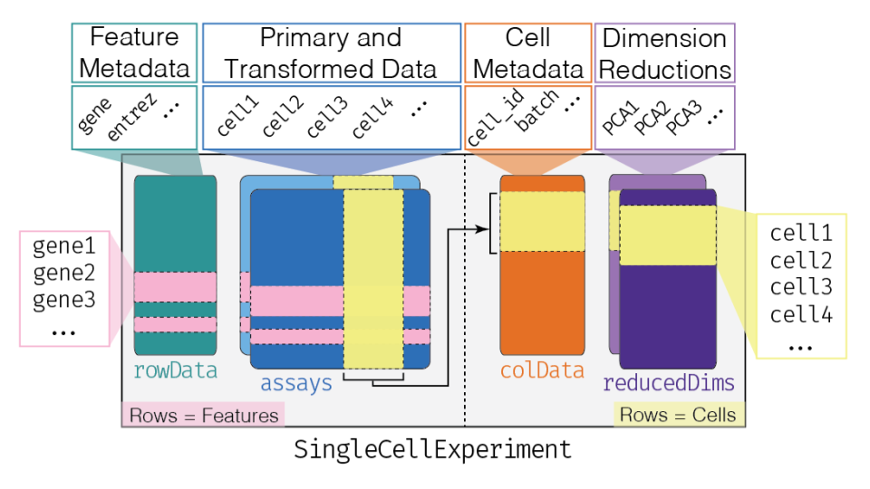
Biomedical Open Case Studies: Quality control for and normalizing of high dimension single nuclear transcriptomic data
Disclaimer
The purpose of the Open Case Studies project is to demonstrate the use of various data science methods, tools, and software in the context of messy, real-world data. A given case study does not cover all aspects of the research process, is not claiming to be the most appropriate way to analyze a given data set, and should not be used in the context of making policy or clinical decisions without external consultation from scientific experts or medical care professionals. In addition, due to size constraints, datasets used within a case study may be a subset of the original/full dataset.
License information
This work is licensed under the Creative Commons Attribution-NonCommercial 4.0 (CC BY-NC 4.0) United States License.
Funding information
This work is funded through the National Institutes of Health, specifically the National Institute of General Medical Sciences: Grant Number 1R25GM160622.
To cite this case study, please use:
Isaac, Kathryn J and Hicks, Stephanie and Wright, Carrie. (2026). https://github.com/opencasestudies/ocs-bio-single-cell/. Normalizing high dimension single cell transcriptomic data (Version v1.0.0)
GitHub repository
To access the GitHub repository for this case study see here: https://github.com/opencasestudies/ocs-bio-single-cell/
Keywords
- Keyword 1
- Keyword 2
- Keyword 3
- …Keyword n
Prerequisites
Prerequisites
Add a list of prerequisites here.
Motivation
This case study explores {}…
Definition
Provide the definition here
Add a simplified version of this image
Main Question
Our main question(s)
- Question 1
- Question 2
Learning Objectives
In this case study, we will explore {}.
This case study will particularly focus on {}.
The skills, methods, and concepts that students will be familiar with by the end of this case study are:
Data Science/Bioinformatics Learning Objectives:
- {FILL IN}
- {FILL IN}
- {FILL IN}
Biological/Topical Learning Objectives:
- {FILL IN}
- {FILL IN}
- {FILL IN}
Objectives Map
NoteObjectives Map: Where It Is Covered
| Learning Goal | Applications / Practice | Location |
|---|---|---|
| Term related to a learning objective | Description of action or activity that will reinforce that LO | Data Import |
| Another term | Description of its activity | Data Wrangling |
| Another learning objective concept | Another description of this one’s activity | Data Visualization |
Context
{FILL IN}
What are the data?
“Raw” Data is available 3 different ways for this project.
- The
.fastqfiles are available on SRA, with instructions on how they were aligned and counted usingsalmon alevinavailable on the GitHub. - Slightly processed matrix files, separated for each of the 6 samples, available on GEO.
- A
SingleCellExperimentobject of slightly processed data, for all 6 samples, available on zenodo are already stored as a specialized R class/object – aSingleCellExperiment. It has data for all 6 samples (“1C”, “2E”, “3C”, “4E”, “5C”, “8E”) in the one object.
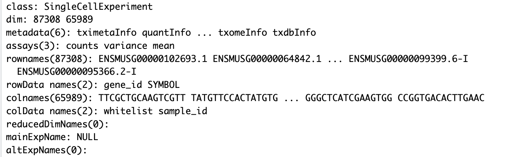
We’ll want to include information in the background sections on .fastq files being the raw data and how they get to where they are when we start working with them for this kind of a project.
The zenodo data and object is the one that the vignette works with. Therefore, I think it would be worthwhile to include a side quest of how they got to that SingleCellExperiment object. But we’ll want to work with it largely because that will make it simpler. I also noticed that the zenodo data object includes a “whitelist” variable, such that for each of the 65989 barcodes across the 6 samples, it’s communicating whether salmon thinks it’s a high quality cell or not. I don’t see this variable getting used in the analysis aside from being included in building the SingleCellExperiment object. It could be interesting to see how it compares to filtering steps (like scuttle QC or ambient RNA detection…)
You can fetch zenodo data with an R package zen4R (which is what I did) or using curl which is what the vignette did. Going to use zen4R for the case study.
(Include in a click to expand section here or earlier about what options there are for aligning and counting single cell data)
Limitations
There are some important considerations regarding this data analysis to keep in mind:
- {FILL IN}
- {FILL IN}
Ethical Considerations
There are some important ethical considerations when working with data relating to this case study’s main questions.
- {FILL IN}
- {FILL IN}
Packages and Setup
We will begin by loading the packages that we will need:
#add library() calls
library(here)
library(tidyverse)
library(zen4R)
library(SingleCellExperiment)
library(tidySingleCellExperiment)
library(AnnotationDbi)
library(EnsDb.Mmusculus.v79)
library(scuttle)
library(scran)
library(scater)
library(scrapper)
library(scDblFinder)
library(singleCellTK)
library(DropletUtils)
library(ggVennDiagram)
library(pipeComp)| Package | Use |
|---|---|
| here | {Package use} |
| tidyverse | {Package use} |
| zen4R | {Package use} |
| SingleCellExperiment | {Package use} |
| tidySingleCellExperiment | Enables using “tidy” manipulation steps for SingleCellExperiment objects |
| scuttle | {Package use} |
| scater | {Package use} |
| scran | {Package use} |
| Azimuth | {Package use} |
| scDblFinder | {Package use} |
| ggplot2 | {Package use} |
| FastCAR or SoupX | {Package use} |
The first time we use a function, we will use the :: to indicate which package we are using. Unless we have overlapping function names, this is not necessary, but we will include it here to be informative about where the functions we will use come from.
How are the single cell Bioconductor packages related to each other? Which ones are meant for which tasks?
- scuttle: QC and data wrangling of
SingleCellExperimentobjects - scran: Analysis functionality when working with
SingleCellExperimentobjects - scater: Plotting functions
- scrapper: Newer, more efficient implementation of
scuttleandscranfunctionality. Seems to be a wrapper for some of the olderscranfunctions too?
Data Import
Read in data
zenodo_doi <- "10.5281/zenodo.10091236"
target_directory <- "/fh/fast/leek_j/user/kisaac/ocs_sc/zenodo_files"
zen4R::download_zenodo(doi = zenodo_doi, path = target_directory, timeout = 600)
snrna_data <- readRDS(here::here("zenodo_files/sce_mouse_sleep_snrnaseq_complete.rds"))Data Exploration
If you have been following along but stopped, we could load our imported data like so:
Add instructions for loading data
If you skipped the data import section click here.
Add instructions for loading data
Explore the SingleCellExperiment Object
Dimensions: Rows and columns
Rows correspond to features – another term for genes. At this point though, they may represent exons or introns since we’re working with single nuclear data.
Columns correspond to droplets – right now they’re termed “droplets” because we may have empty droplets or doublets. After filtering, these droplets can also be termed nuclei for snRNA-seq data because we assume we’ve removed the droplets without single nuclei.
What are the dimensions of the object?
dim(snrna_data)[1] 87308 65989So that’s 87,308 features and 65,989 droplets.
By the time that we’re done with filtering, we expect to have a lot more nuclei than we do genes. This is because single cell data is very sparse typically. More on this later (even within this exploration section), but briefly:
- Genes currently in the
SingleCellExperimentobject could represent mitochondrial genes – we don’t want those because we’re working with single nuclear data - (Add a dropdown section on why single cell data may be interested in mitochondrial reads)
- Genes also may be listed more than once right now – exon and intron versions
- There could be non-informative genes (low or no counts across droplets)
We will be filtering out some droplets (empty from ambient RNA detection and doublets from doublet detection), but filtering resources advise liberally keeping droplets when possible.
Metadata and Data
Show how to look at the column metadata
colData(snrna_data)DataFrame with 65989 rows and 2 columns
whitelist sample_id
<logical> <character>
TTCGCTGCAAGTCGTT TRUE 1C
TATGTTCCACTATGTG TRUE 1C
AGGGTCCTCCAGCCTT TRUE 1C
CACATGACATCGGTTA TRUE 1C
GCAGTGGTATCAACGC TRUE 1C
... ... ...
CCTCACAGTCTGTAGT FALSE 8E
GAGAAATCAAGTGACG FALSE 8E
GCAGCTGAGGCACTAG FALSE 8E
GGGCTCATCGAAGTGG FALSE 8E
CCGGTGACACTTGAAC FALSE 8EWhat metadata is currently there?
whitelistis asalmon alevinoutput from alignment and quantification of the reads, suggesting if that program thinks that the droplet should be kept (TRUE) or not (FALSE). We’ll compare our final filtering to this later in the Data Wrangling section (or as a basic suggested exercise?).sample_idprovides the ID for the samples, relating to which droplets were part of sequencing which samples. (In the narrative, especially make note that the Sample ID information is column metadata meaning that it connects to the droplets rather than the features (rows))
Note that the row names for the metadata above are the droplet IDs or “cell barcodes”. They look like a DNA sequence and that’s because they represent the specific nucleotide sequences attached to beads in each droplet that allow for molecules to be tagged or identified as originating from the same cell: https://www.10xgenomics.com/blog/how-does-single-cell-rna-seq-work
Any additional metadata that we want to add for this dataset will be added to the colData. We can access colData metadata one of two ways:
colData(snrna_data)$sample_idsnrna_data$sample_id
Show what samples there are
unique(snrna_data$sample_id)[1] "1C" "2E" "3C" "4E" "5C" "8E"Note that every Sample ID either has a C or an E in the ID
ncol(snrna_data) == sum(str_detect(snrna_data$sample_id, "C|E"))[1] TRUEFocus on droplets
Confirm how many droplets there are
Looking at the number of rows from the colData above and our dimensions earlier, we confirm that there are currently 65,989 droplets represented in this dataset.
Show how many droplets there are per sample
table(snrna_data$sample_id)1C 2E 3C 4E 5C 8E
11000 10997 10999 10994 11000 10999(if we add the numbers together from the table, we’ll also get the same number of droplets we saw earlier, so every droplet is assigned to a sample).
ncol(snrna_data) == sum(table(snrna_data$sample_id))[1] TRUEFocus on features
What are stored in the rows?
rowData(snrna_data)DataFrame with 87308 rows and 2 columns
gene_id SYMBOL
<character> <character>
ENSMUSG00000102693.1 ENSMUSG00000102693.1 NA
ENSMUSG00000064842.1 ENSMUSG00000064842.1 Gm26206
ENSMUSG00000102851.1 ENSMUSG00000102851.1 Gm18956
ENSMUSG00000089699.1 ENSMUSG00000089699.1 NA
ENSMUSG00000103147.1 ENSMUSG00000103147.1 Gm7341
... ... ...
ENSMUSG00000102011.1-I ENSMUSG00000102011.1-I NA
ENSMUSG00000100964.1-I ENSMUSG00000100964.1-I NA
ENSMUSG00000099619.6-I ENSMUSG00000099619.6-I NA
ENSMUSG00000099399.6-I ENSMUSG00000099399.6-I NA
ENSMUSG00000095366.2-I ENSMUSG00000095366.2-I NAWe see that this is information about the features or the genes.
How do these columns get added to the SummarizedExperimentObject? … need to add
Where are the gene names?
The gene names are both the rownames and stored in the gene_id column of the rowData() output.
Notice that the gene IDs begin with “ENSMUSG” which tells us that they are Ensembl (ENS) Mus musculus (MUS) stable gene (trailing G) IDs.
Source: https://useast.ensembl.org/Help/Faq?id=488
Every row has that part of the ID at the beginning:
sum(str_detect(rownames(snrna_data), "^ENSMUSG")) == nrow(snrna_data)[1] TRUEShow how many genes there are
From the number of rows in the output from rowData() as well as the dimension beforehand, there are 87,308 features represented in this data.
However, of these features, some of the “genes” are listed more than once because both its exons and introns are represented. Notice the “-I” above at the end of the gene_id column. That signifies an intron.
sum(str_detect(rownames(snrna_data), "ENSMUSG00000095366"))[1] 2If we look specifically at the genes IDs for those 2 using which …
rownames(snrna_data)[which(str_detect(rownames(snrna_data), "ENSMUSG00000095366"))][1] "ENSMUSG00000095366.2" "ENSMUSG00000095366.2-I"We can look at how many features are representing an intron
sum(str_detect(rownames(snrna_data), "-I$"))[1] 32961If we were to just focus on the base ID (everything before the .## representing the version information for that feature), we can see how many unique genes are represented in this data
To do this, let’s remove everything period and after (that includes the numbers and the -I when present). This is the same as replacing all of that with an empty string ""
pattern_to_remove <- "\\..*"
replace_string <- ""
length(unique(sub(pattern_to_remove, replace_string, rownames(snrna_data))))That leaves us with 54,464 unique genes represented in this data prior to filtering.
[1] 54464(add a dropdown section about why we might filter genes specifically and not just droplets and point to section in data wrangling that does that)
Grab a random mitochondrial gene to show that there are some in the data
Random Mitochondrial gene ENSMUSG00000064351: https://useast.ensembl.org/Mus_musculus/Gene/Strain_Compara_Ortholog?g=ENSMUSG00000064351;r=MT:5328-6872;t=ENSMUST00000082402
“Mitochondrially encoded cytochrome c oxidase I”
Can confirm this ID is in this dataset
sum(str_detect(rownames(snrna_data), "ENSMUSG00000064336"))[1] 1But unlike the introns, there’s nothing special about the gene ID for us to connect this gene to the Mitochondria.
rownames(snrna_data)[which(str_detect(rownames(snrna_data), "ENSMUSG00000064336"))][1] "ENSMUSG00000064336.1"Not even in the gene symbol rowData() output column.
rowData(snrna_data)[which(str_detect(rownames(snrna_data), "ENSMUSG00000064336")), "SYMBOL"]ENSMUSG00000064336
NAFocus on counts data
Show how to look at the counts data
There are three ways to access the counts data for a SingleCellExperiment object.
assays(snrna_data)$countsassay(snrna_data, "counts")counts(snrna_data)- Note that
snrna_data$countswon’t work and returnsNULL
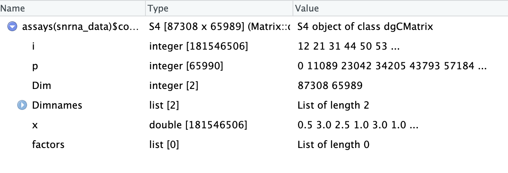
87308 x 65989 sparse Matrix of class "dgCMatrix"
TTCGCTGCAAGTCGTT TATGTTCCACTATGTG AGGGTCCTCCAGCCTT CACATGACATCGGTTA ...
ENSMUSG00000102693.1 . . . . ...
ENSMUSG00000064842.1 . . . . ...
ENSMUSG00000102851.1 . . . . ...
ENSMUSG00000089699.1 . . . . ...
ENSMUSG00000103147.1 . . . . ...
... ... ... ... ... ...
ENSMUSG00000100608.1-I . . . . ...
ENSMUSG00000102011.1-I . . . . ...
ENSMUSG00000100964.1-I . . . . ...
ENSMUSG00000099619.6-I . . . . ...
ENSMUSG00000099399.6-I . . . . ...Zeros or sparse representation?
The preview tells you that this is a “sparse” matrix meaning that it doesn’t store zeros, instead storing only non-zero values as well as locations where those non-zero values belong in the matrix. Instead of displaying a zero, it will display a . when you view the object/matrix.
Point to and explain this documentation: https://www.rdocumentation.org/packages/Matrix/versions/1.7-4/topics/sparseMatrix
There are a lot of zero values in this data!! Very sparse!
non_zero_vals <- counts(snrna_data)@x #grabs just the non-zero data
prod(dim(snrna_data)) - length(non_zero_vals)5579821106Whole numbers or decimals?
Surprisingly, the counts matrix does not store whole numbers / integers only, but rather it can contain decimal values (also known as “doubles” in R). That’s because salmon is finding gene level estimates
Resources:
- https://www.seqanswers.com/forum/bioinformatics/bioinformatics-aa/326416-nf-core-rnaseq-produces-non-integer-counts-in-salmon-merged-gene_counts-tsv
- https://pmc.ncbi.nlm.nih.gov/articles/PMC6437997/
That’s not to say there aren’t whole numbers …. it’s just that there are decimals too
length(non_zero_vals) #this is the number of value that aren't zero[1] 181546506sum(non_zero_vals %% 1 == 0) #these are the number of estimates that are whole numbers[1] 142611235181546506 - 142611235 # these are the number of estimates that are decimals[1] 38935271Visualizing these “counts” …
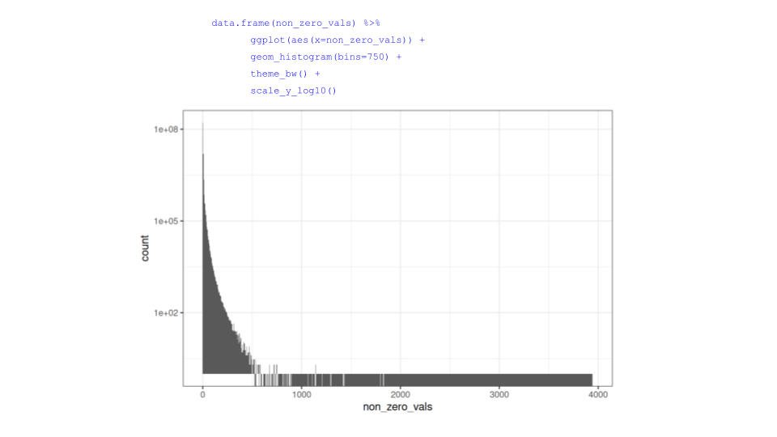
rowSums… what does it represent? quantiles?
rowSums() is representing the sum of counts for a feature across droplets.
quantile(rowSums(assays(snrna_data)$counts))0% 25% 50% 75% 100%
0.0000 0.0000 20.0000 883.4077 4036226.0377We see that some features have 0 counts across droplets. These are non-informative features where we won’t be able to distinguish expression levels or patterns and how they might change according to condition, diagnosis, or treatment. Genes with consistently low counts (greater than 0) can still be non-informative, so often researchers will use a threshold approach to make sure that a sufficient number of droplets have at least a certain number of a counts (or greater) for features and filter out ones that don’t. A rowSums approach is necessary for this, and while it is still summing counts, those counts are compared to a threshold such that the following example will return a sum of TRUEs (1’s) and FALSEs (0’s) which are reporting if the observed number of counts is greater than the observed for each droplet for each feature. Specifically, for that feature, how many droplets have observed counts greater than the threshold.
rowSums(assays(snrna_data)$counts > 0) ENSMUSG00000102693.1 ENSMUSG00000064842.1 ENSMUSG00000102851.1 ENSMUSG00000089699.1 ENSMUSG00000103147.1
2 0 48 0 11
ENSMUSG00000102348.1 ENSMUSG00000102592.1 ENSMUSG00000104238.1 ENSMUSG00000102269.1 ENSMUSG00000096126.1
52 0 44 1 0
ENSMUSG00000102735.1 ENSMUSG00000103922.1 ENSMUSG00000025903.14 ENSMUSG00000104217.1 ENSMUSG00000033813.15
5 32 2963 210 3604
ENSMUSG00000085623.1 ENSMUSG00000091665.1 ENSMUSG00000033793.12 ENSMUSG00000104046.1 ENSMUSG00000102907.1
80 31 12286 27 1
....Finally, this rowSum may use a second threshold to return for each feature a TRUE or FALSE, reporting if that feature has at least a certain number of droplets meeting the count threshold.
rowSums(assays(snrna_data)$counts > 0) > 10 ENSMUSG00000102693.1 ENSMUSG00000064842.1 ENSMUSG00000102851.1 ENSMUSG00000089699.1 ENSMUSG00000103147.1
FALSE FALSE TRUE FALSE TRUE
ENSMUSG00000102348.1 ENSMUSG00000102592.1 ENSMUSG00000104238.1 ENSMUSG00000102269.1 ENSMUSG00000096126.1
TRUE FALSE TRUE FALSE FALSE
ENSMUSG00000102735.1 ENSMUSG00000103922.1 ENSMUSG00000025903.14 ENSMUSG00000104217.1 ENSMUSG00000033813.15
FALSE TRUE TRUE TRUE TRUE
ENSMUSG00000085623.1 ENSMUSG00000091665.1 ENSMUSG00000033793.12 ENSMUSG00000104046.1 ENSMUSG00000102907.1
TRUE TRUE TRUE TRUE FALSE
....
colSums… what does it represent? quantiles?
quantile(colSums(assays(snrna_data)$counts))0% 25% 50% 75% 100%
196 2968 3897 5296 174878colSums() is representing the sum of counts across features within a droplet. This is a proxy for library size. But not exactly library size until we handle having both introns and exons represented in the data.
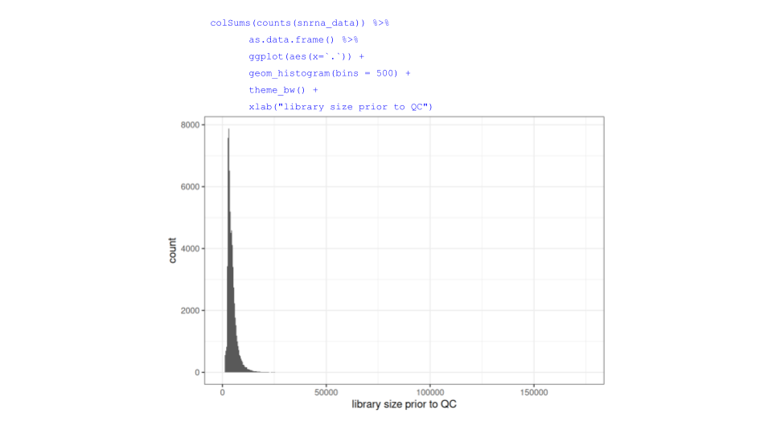
Note we’re still working with features (because we have a mix of introns and exons) and droplets because we haven’t filtered the data to a point where we can confidently say we’re working with single nuclear data yet)
colSums() can be used with a similar thresholding approach to see how many features are detected in a droplet
colSums(assays(snrna_data)$counts > 0)TTCGCTGCAAGTCGTT TATGTTCCACTATGTG AGGGTCCTCCAGCCTT CACATGACATCGGTTA GCAGTGGTATCAACGC CCACGAGCACACGGTC
11089 11953 11163 9588 13391 8456
TCCTAATAGAACGCGT TATCCTATCCTTGACC GGGACTCCACCACTGG CATGGTACATGGTACT AAGCAGTGGTATCAAC TCGACGGGTAGTGCGA
8482 8542 8143 9301 14896 8390
GTGGTTAAGTCCTGCG ATACCTTGTGATACCT AACAAAGCACACGCCA CAGTGGTATCAACGCA GTTACCCCAACACTAC ACTTTCAGTGTTGATC
9375 9650 8087 9313 8800 9451
CCACGTTAGCTACGTT TCTACATGTTGCTGAT GCGGATCGTTCAGTAC GTGGTATCAACGCAGA GACTTCCTCCAACTAG TACATTCGTGCGTGCT
8798 7849 9185 13867 8042 6924quantile(colSums(assays(snrna_data)$counts > 0))0% 25% 50% 75% 100%
201 2073 2510 3172 17369This is a proxy for the number of detected genes, but again we’ll first have to handle having both exons and introns represented in the data.
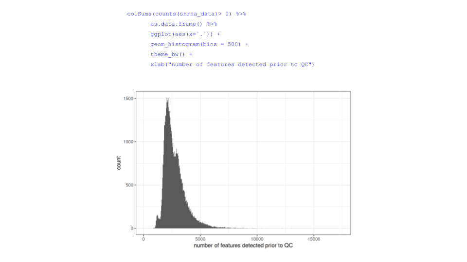
What does this mean for what sort of data wrangling we need to do?
Is there anything special I need to do in the data wrangling to account for salmon alevin returning a combination of integers and doubles for the gene estimates?
(will fill in this section for the narrative draft)
- Discuss the concepts of library size and number of features and explain why for this data we can’t directly compute those yet
To work with this data even for filtering, we’re going to need to …
- We will need to combine intron and exon data for each gene with data for both
- Certain filtering tasks (ambient RNA detection being one) will need to consider samples separately, so we’ll need to split the sample data into different summarized experiment objects
Because of downstream tasks we want to do, we’ll need to ….
Data Wrangling
If you have been following along but stopped, we could load our imported data like so:
Add instructions for importing data
If you skipped the data import section click here.
Add instructions for importing data
Using that zenodo data means there’s an overall SingleCellExperiment object for all mice – we just have to
- handle introns and exons both being represented in the data
- mark mitochondrial genes
Steps in this section
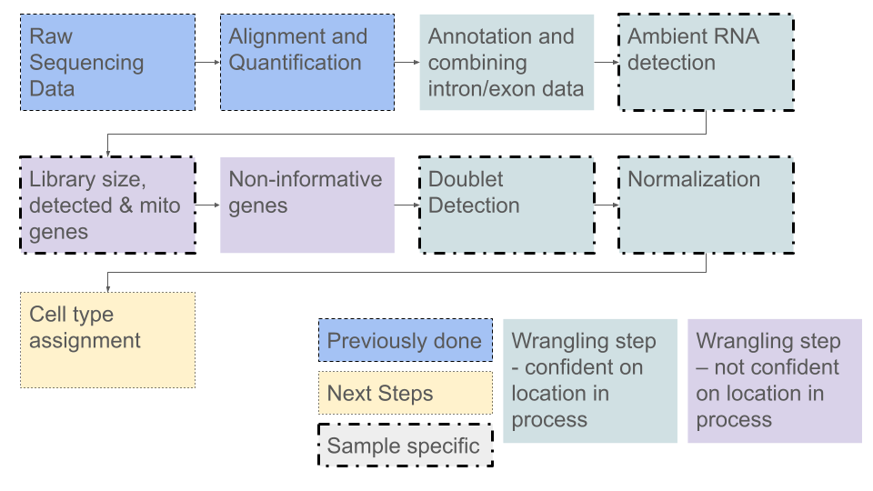
Part 1: Data Preparation
Handling Introns and Exons
# Extract Exon Ensembl IDs and associated count data
exon_ids <- rowData(snrna_data) %>%
as.data.frame() %>%
dplyr::filter(!grepl("-I", gene_id)) %>%
pull(gene_id)
exon_data <- snrna_data[exon_ids]
# Extract Intron Ensembl IDs and associated count data
intron_ids <- rowData(snrna_data) %>%
as.data.frame() %>%
dplyr::filter(grepl("-I", gene_id)) %>%
pull(gene_id)
intron_data <- snrna_data[intron_ids]
# Simplify Ensembl IDs and find matching IDs between introns and exons
pattern_to_remove <- "\\..*"
replace_string <- ""
## the IDs
exon_ids <- sub(pattern_to_remove, replace_string, exon_ids)
intron_ids <- sub(pattern_to_remove, replace_string, intron_ids)
## the data sources
rownames(exon_data) <- exon_ids
rownames(intron_data) <- intron_ids
rownames(snrna_data) <- sub(pattern_to_remove, replace_string, rownames(snrna_data))
# Subset to only exons and introns with the same Ensembl ID
same_ensembl <- intersect(exon_ids, intron_ids)
# Remove introns and exons with shared IDs from the overall snRNA data
snrna_data_ids_subset <- rownames(snrna_data) %>%
as.data.frame() %>%
dplyr::filter(!. %in% same_ensembl) %>%
pull(.)
# A new SingleCellExperiment object was created, where the sum
# of the UMI counts of spliced mRNA and introns sharing the same
# Ensembl ID was added.
sce <- SingleCellExperiment(assays = list(counts = rbind(counts(snrna_data[snrna_data_ids_subset]),
counts(exon_data[same_ensembl]) + counts(intron_data[same_ensembl]))))
# Add back column and row data
colData(sce) <- colData(snrna_data)
rowData(sce) <- rbind(rowData(snrna_data) %>%
as.data.frame() %>%
dplyr::filter(rownames(.) %in% snrna_data_ids_subset),
rowData(snrna_data) %>%
as.data.frame() %>%
dplyr::filter(rownames(.) %in% same_ensembl)
)
# Add some more colData columns like condition and replicate number
sce <- sce %>%
mutate(condition = case_when(str_detect(sample_id, "C") ~ "Control",
str_detect(sample_id, "E") ~ "SleepDeprived"
)
) %>%
mutate(replicate = factor(str_remove(sample_id, "C|E")))Annotate the chromosome including mitochondrial genes within rowData
map <- AnnotationDbi::mapIds(EnsDb.Mmusculus.v79, keys = rownames(sce), column = "SEQNAME",
keytype = "GENEID")
rowData(sce)$CHR <- map
rowData(sce)$is_mito <- case_when(
rowData(sce)$CHR == "MT" ~ TRUE,
.default = FALSE
)Warning message: Unable to map 13156 of 54464 requested IDs.
Note that the number of rows matched the length of map though.
Let’s reclaim some environment space since we won’t need snrna_data again … removing the large data sets.
rm(snrna_data)
rm(exon_data)
rm(intron_data)We can also remove some of the less large, but still sizable objects which are unnecessary moving forward
rm(exon_ids)
rm(intron_ids)
rm(map)
rm(same_ensembl)
rm(snrna_data_ids_subset)Create SingleCellExperiment objects for each mouse
Ambient RNA detection is run on each sample separately, so we want to separate out the samples
sce_list <- split(sce, sce$sample_id)
names(sce_list) <- make.names(names(sce_list)) #if we don't do this, the names begin with a number and we won't be able to as easily access the different samples
names(sce_list)[1] "X1C" "X2E" "X3C" "X4E" "X5C" "X8E"Add instructions on saving data in case people take a break here (my file is called data/wrangled/sce_annot.rds)
Part 2: Quality Control
Add instructions on importing data in case people took a break and pick back up here.
Ambient RNA detection
Note that Ambient RNA detection should occur before any other filtering (I think even before filtering of non-informative (count 0) genes) because the algorithms rely on being able to model the background distribution of reads.
The classical plot to evaluate whether there may be Ambient RNA in your sample is the Barcode Rank plot that visualizes the total UMI or read counts for each barcode against the barcode’s rank (highest to lowest).
Note that though I’m using all of the samples together to make the plot, according to the OSCA book, we want to run ambient RNA detection tools on each sample separately because each sample will have a unique ambient RNA landscape and the tools (at least many of them) are comparing the total counts for each barcode against the total counts for the suspected ambient RNA population to decide what is an “empty” droplet vs a droplet with the data you want.
This approach utilizes base R to find the total counts and ranks (because DropletUtils wasn’t installing properly for me at first).
# 1. Calculate total counts (UMIs) per barcode (column)
total_counts <- Matrix::colSums(assays(sce)$counts)
# 2. Filter out barcodes with 0 counts (for speed)
total_counts <- total_counts[total_counts > 0]
# 3. Create a sorted data frame of unique counts and their ranks
bcranks <- data.frame(
Total = sort(total_counts, decreasing = TRUE),
Rank = seq_along(total_counts)
)
# 4. Remove duplicates
bcrank_unique <- bcranks[!duplicated(bcranks$Total), ]
# 5.
bcrank_unique %>%
ggplot(aes(x=Rank, y = Total)) +
geom_point() +
xlab("Barcode Rank") +
ylab("Total UMI Count") +
scale_x_log10() +
scale_y_log10() +
theme_bw()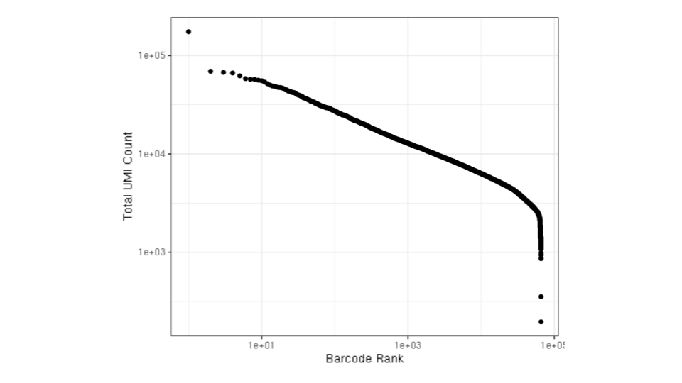
This approach utilizes DropletUtils to compute the sums and barcode ranks
ranks <- DropletUtils::barcodeRanks(sce)
uniq <- !duplicated(ranks$rank)
ranks_uniq <- ranks[uniq,]
ranks_uniq %>%
ggplot(aes(x = rank, y = total)) +
geom_point() +
xlab("Barcode Rank") +
ylab("Total UMI Count") +
scale_x_log10() +
scale_y_log10() +
theme_bw()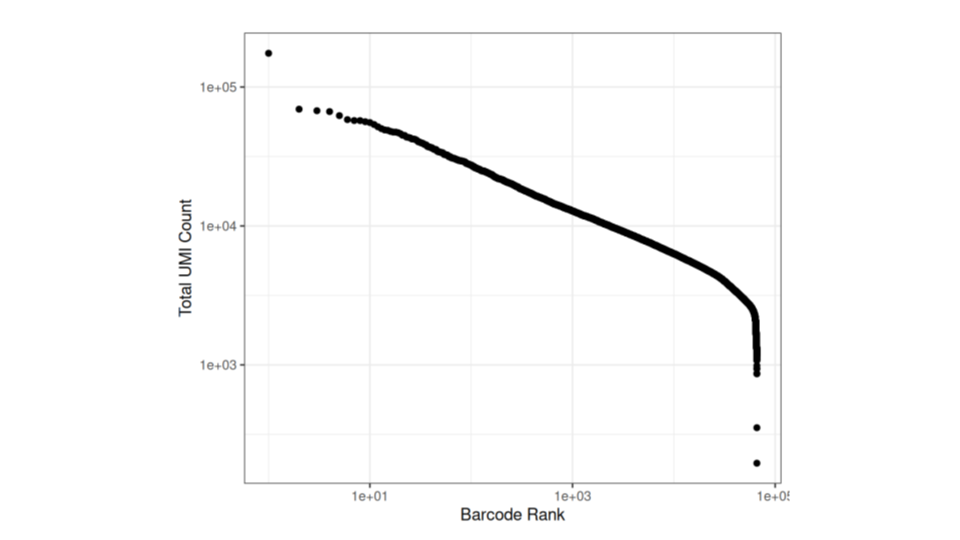
Both plots look the same and the tools that I’ve used either suggest keeping every droplet, or won’t run because it estimates that too much of the sample is contamination. This is the case for SoupX which suggested that the estimated contamination level was high (which is to be expected from snRNA-seq data): https://github.com/constantAmateur/SoupX/issues/76.
Therefore, I’m turning to a tool that was designed specifically for this task in snRNA-seq data. DIEM or “Debris Identification using Expectation Maximization”.
Working on running this within a script for each sample instead of an interactive session since the EM step takes quite a bit of time.
test_sce <- create_SCE(assays(sce_list[["1C"]])$counts)
# Plot total counts ranked
barcode_rank_plot(test_sce)
# DIEM steps
diem_sce_1c <- set_debris_test_set(test_sce)
diem_sce_1c <- filter_genes(diem_sce_1c)
diem_sce_1c <- get_pcs(diem_sce_1c)
diem_sce_1c <- init(diem_sce_1c)
diem_sce_1c <- run_em(diem_sce_1c)
diem_sce_1c <- assign_clusters(diem_sce_1c)
diem_sce_1c <- estimate_dbr_score(diem_sce_1c)
# Evaluate debris scores
sm <- summarize_clusters(diem_sce_1c)
plot_clust(diem_sce_1c, feat_x = "n_genes", feat_y = "score.debris",
log_x = TRUE, log_y = FALSE)
plot_clust(diem_sce_1c, feat_x = "pct.mt", feat_y = "score.debris",
log_x = TRUE, log_y = FALSE)
# Call targets using debris score for single-nucleus data
diem_sce_1c <- call_targets(diem_sce_1c, thresh_score = 0.5)
# Call targets by removing droplets in debris cluster(s) for single-cell data
diem_sce_1c <- call_targets(diem_sce_1c, clusters = "debris", thresh = NULL)Likely will provide filtering output suggestions from DIEM (if there are any) to learners using a cooking show approach rather than having them run it themselves.
Filter for non-informative genes
rowData(sce)$keep_informative <- rowSums(assays(sce)$counts > 0) > 10
table(rowData(sce)$keep_informative)FALSE TRUE
23521 30943What thresholds is appropriate here? This code is currently finding genes that have a non-zero count in at least 11 droplets. As described in this resource, we want to make sure we’re not potentially removing the ability to detect rare cell types and we might be able to use clustering to help tune this number
And when is the right time to do this step filtering out non-informative genes? I’m fairly certain after ambient RNA detection and before normalization I would expect, but I’m not sure if it needs to be before other QC steps as well.
Note that my computational environment struggles unless I constantly overwrite sce. To increase feasibility, I think
- we need to show learners how to remove large things we won’t need again from the environment
- avoid writing intermediates (like
sce_filter)
Use perCellQCMetrics to identify low quality or damaged droplets
(rename this heading because of need for different function)
qcmetrics <- scuttle::perCellQCMetrics(sce, subsets = list(Mito = which(rowData(sce)$is_mito)))Warning message about deprecation
Warning message: In .per_cell_qc_metrics(assay(x, assay.type), subsets = subsets, : ‘perCellQCMetrics’ is deprecated. Use ‘scrapper::computeRnaQcMetrics’ instead.
lowFeatures <- scuttle::isOutlier(qcmetrics$detected, type="lower", log=TRUE) #low number of genes
lowLib <- isOutlier(qcmetrics$sum, type="lower", log=TRUE) #low library depth
highMito <- isOutlier(qcmetrics$subsets_Mito_percent, type="higher") #high percentage of mitochondrial genes
remove <- lowFeatures | lowLib | highMito
table(remove)FALSE TRUE
61051 4938filterSuggestions <- list(Features = which(lowFeatures), Library = which(lowLib), Mitochondrial = which(highMito))
ggVennDiagram(filterSuggestions)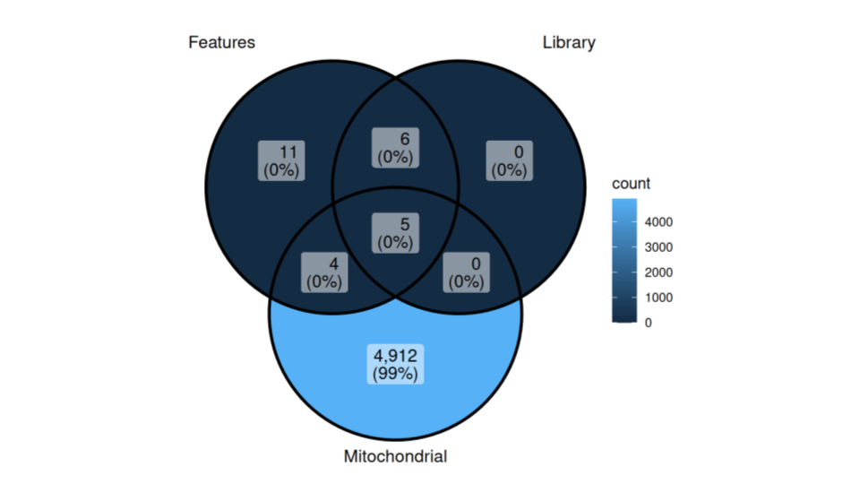
(Add a dropdown section describing MAD (median absolute deviation) and how that is computed as the median of the absolute value of the differences of the observed values from the median of the observed values) and how they’re using 3 of those to try to get the outliers from normally distributed data…. plot your data and if it doesn’t look normal this approach might not be for you.)
But since this is using a deprecated function, let’s switch to the scrapper function that is suggested within the warning message.
However, when I try to use scrapper::computeRnaQcMetrics, I get an error that it doesn’t work with SummarizedExperiment inputs and to look at the quickRnaQc.se function from scrapper instead.
Note: I’m not necessarily planning to show the whole evolution of planning to use perCellQCMetrics and pivoting over to using quickRnaQc.se, but am documenting it here since it’s a departure from the original plan.
sce <- scrapper::quickRnaQc.se(sce, subsets = list(Mito = which(rowData(sce)$is_mito)))
table(!sce$keep)When working through single cell data with Galaxy tutorials, and working with spatial data for another case study, I’ve seen two sided filters for the number of genes/features and library size where it’s not just excluding droplets with a certain value below a minimum, but also excluding those with a certain value above a maximum. However, I haven’t seen any OSCA or OSCA related tutorials doing a similar thing. The authors in their vignette also only show a lower test. Should I be utilizing a maximum filter too? The default scrapper package behavior is to only look at the lower limits for sum and detected.
FALSE TRUE
61051 4938We see that this approach is suggesting the removal of the same number of droplets. And from consulting the documentation on the function, it’s just a faster/more efficient implementation of the same steps that we did using scuttle. Both use “adaptive” thresholds that depend upon what is observed in the data and the median absolute deviation that is observed for each metric across all the droplets. This one however has a few differences,
- in one line of code, adds
colDatatelling us what we should keep in addition to thesum,detected, andsubset.proportion.Mitovalues that the scuttle function previously returned. Previously that required additionalscuttlefunctions to do. - It also returns the thresholds that it used to from those values to decide on which droplets should be filtered.
- This one returns a
SingleCellExperimentobject while scuttle only returned a dataframe.
(Add a dropdown section comparing and contrasting this adaptive threshold/MAD approach with fixed threshold values as described here: https://bioconductor.org/books/release/scrapbook/quality-control.html#qc-fixed)
metadata(sce)$qc$thresholds$sum
[1] 1089.368
$detected
[1] 917.9337
$subset.proportion
Mito
0.01257568scater::plotColData(sce,
y = "subset.proportion.Mito",
colour_by="keep")
sce$highMito <- sce$subset.proportion.Mito >= metadata(sce)$qc$thresholds$subset.proportion[["Mito"]]
plotColData(sce,
y = "subset.proportion.Mito",
åcolour_by = "highMito")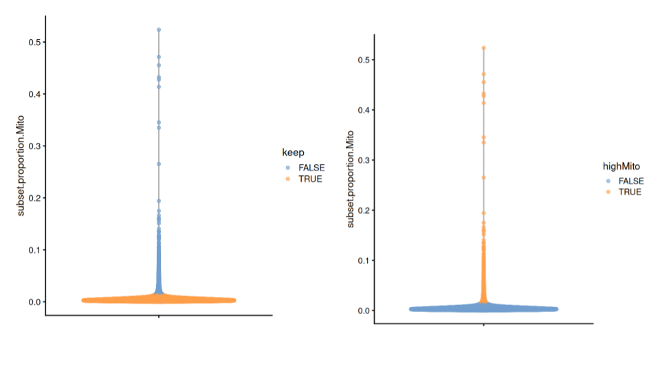
plotColData(sce,
y = "detected",
colour_by = "keep")
sce$lowFeature <- sce$detected <= metadata(sce)$qc$thresholds$detected
plotColData(sce,
y = "detected",
colour_by = "lowFeature")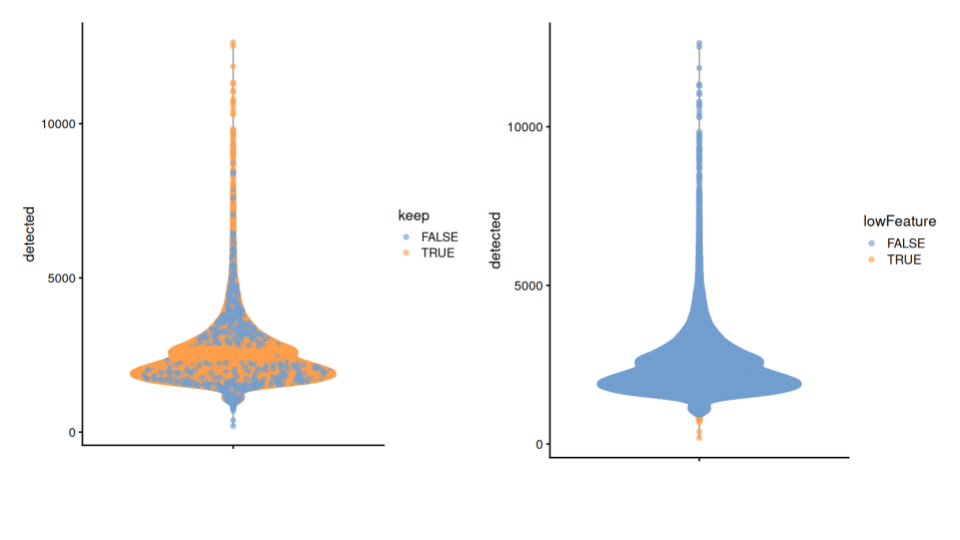
plotColData(sce,
y = "sum",
colour_by = "keep")
sce$lowLibrary <- sce$sum <= metadata(sce)$qc$thresholds$sum
plotColData(sce,
y = "sum",
colour_by = "lowLibrary")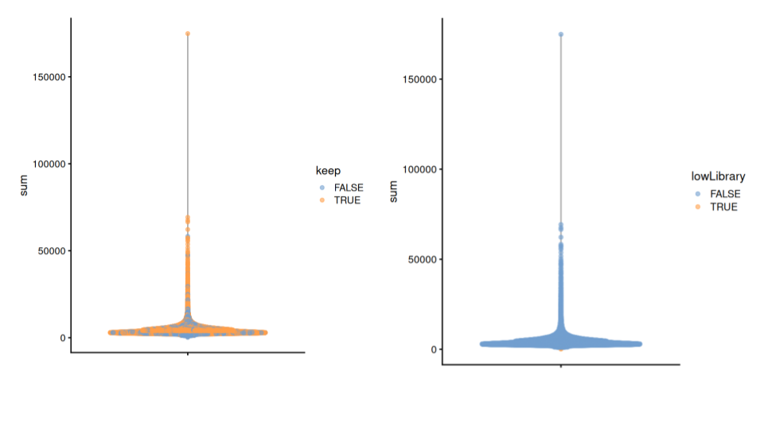
Alternative QC visualizations
sum vs detected
plotColData(sce,
x = "sum",
y = "detected",
colour_by = "keep")
plotColData(sce,
x = "sum",
y = "detected",
colour_by = "lowLibrary")
plotColData(sce,
x = "sum",
y = "detected",
colour_by = "lowFeature")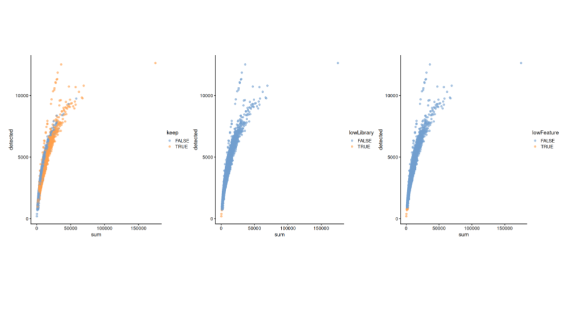
plotColData(sce,
x = "sum",
y = "detected",
colour_by = "subset.proportion.Mito",
point_alpha = 0.25) +
scale_color_viridis_c(direction = -1)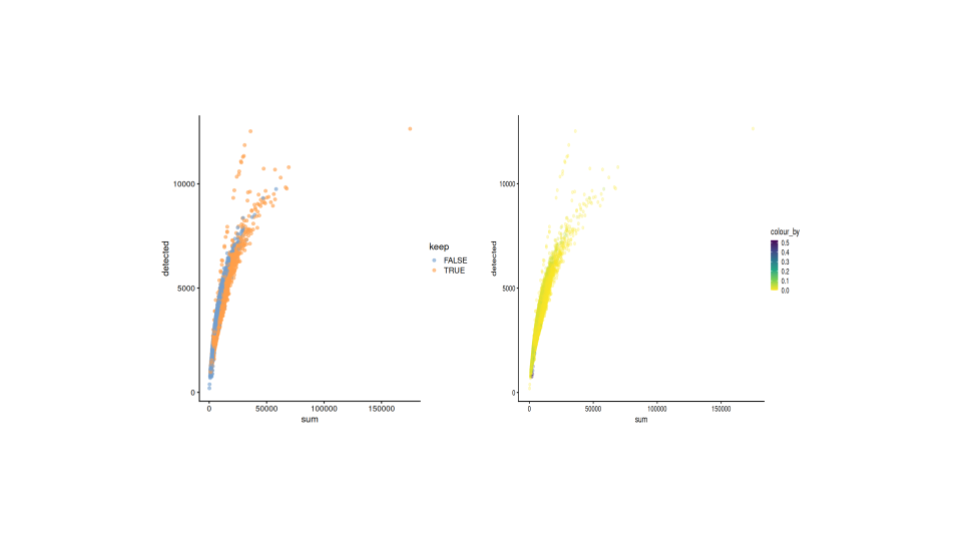
sum vs mito
plotColData(sce,
x = "sum",
y = "subset.proportion.Mito",
colour_by = "keep")
plotColData(sce,
x = "sum",
y = "subset.proportion.Mito",
colour_by = "lowLibrary")
plotColData(sce,
x = "sum",
y = "subset.proportion.Mito",
colour_by = "highMito")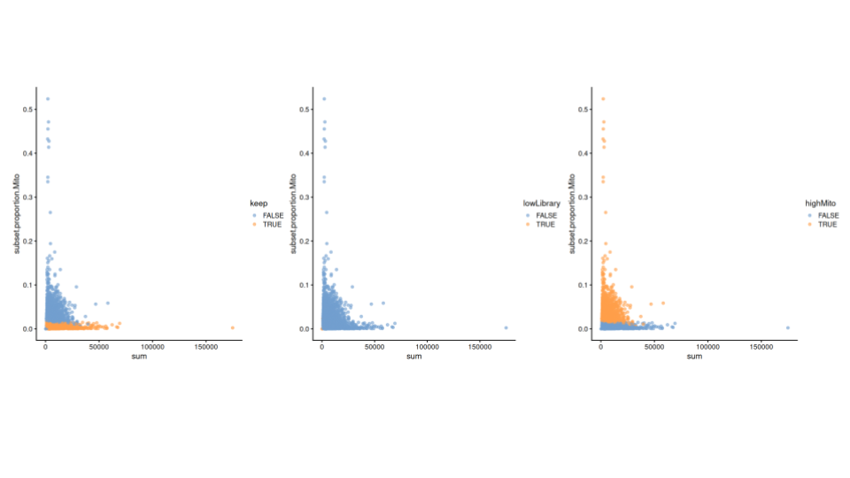
detected vs mito
plotColData(sce,
x = "detected",
y = "subset.proportion.Mito",
colour_by = "keep")
plotColData(sce,
x = "detected",
y = "subset.proportion.Mito",
colour_by = "lowFeature")
plotColData(sce,
x = "detected",
y = "subset.proportion.Mito",
colour_by = "highMito")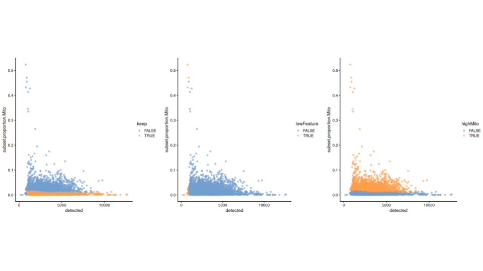
What if this low quality filtering were aware of the sample ID information?
Let’s save the old output (so we can compare suggested thresholding later), by renaming the column names and metadata
colData(sce) <- colData(sce) %>%
as.data.frame() %>%
rename_with( ~ paste0("nb_", .x), #nb for non-block
.cols = -all_of(c("whitelist", "sample_id", "condition", "replicate"))) %>%
DataFrame()
metadata(sce)$nb_qc$thresholds <- metadata(sce)$qc$thresholdssce <- quickRnaQc.se(sce, subsets = list(Mito = which(rowData(sce)$is_mito)),
block = sce$sample_id)
table(!sce$keep)FALSE TRUE
61168 4821We keep a little over 100 droplets we would have otherwise filtered.
sce$highMito <- sce$subset.proportion.Mito >= metadata(sce)$qc$thresholds$subset.proportion[["Mito"]][sce$sample_id]
sce$lowFeature <- sce$detected <= metadata(sce)$qc$thresholds$detected[sce$sample_id]
sce$lowLibrary <- sce$sum <= metadata(sce)$qc$thresholds$sum[sce$sample_id]gridExtra::grid.arrange(
plotColData(sce, y="sum", x="sample_id", colour_by="keep") +
categoricalHlinesNamed(metadata(sce)$qc$thresholds$sum, levels=NULL, linetype="dashed", color="purple") +
scale_x_discrete(guide = guide_axis(angle = 45)) +
scale_y_log10() +
ggtitle("Total count"),
plotColData(sce, y="detected", x="sample_id", colour_by="keep") +
categoricalHlinesNamed(metadata(sce)$qc$thresholds$detected, levels=NULL, linetype="dashed", color="purple") +
scale_x_discrete(guide = guide_axis(angle = 45)) +
scale_y_log10() +
ggtitle("Detected features"),
plotColData(sce, y="subset.proportion.Mito", x="sample_id", colour_by="keep") +
categoricalHlinesNamed(metadata(sce)$qc$thresholds$subset.proportion[["Mito"]], levels=NULL, linetype="dashed", color="purple") +
scale_x_discrete(guide = guide_axis(angle = 45)) +
ggtitle("Mito proportion"),
nrow = 3)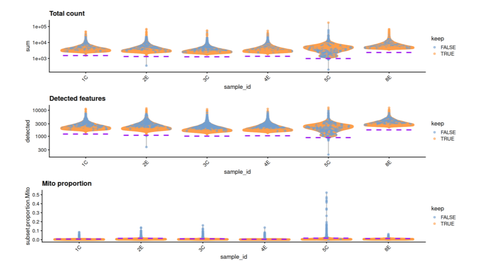
Note that this plot is related to Figure S1 from the paper but uses an inverted color scheme.
And considering the sample violin plots for each of these metrics, we can see that different samples (like 5C and 2E) need more conservative thresholds than other samples. By using less conservative thresholds with the other samples, we end up retaining more data. Because the samples were likely processed separately, this makes sense that they might have different environments driving differences in filtering needs.
gridExtra::grid.arrange(
plotColData(sce, y="sum", x="sample_id", colour_by="lowLibrary") +
categoricalHlinesNamed(metadata(sce)$qc$thresholds$sum, levels=NULL, linetype="dashed", color="purple") +
scale_x_discrete(guide = guide_axis(angle = 45)) +
scale_y_log10() +
ggtitle("Total count"),
plotColData(sce, y="detected", x="sample_id", colour_by="lowFeature") +
categoricalHlinesNamed(metadata(sce)$qc$thresholds$detected, levels=NULL, linetype="dashed", color="purple") +
scale_x_discrete(guide = guide_axis(angle = 45)) +
scale_y_log10() +
ggtitle("Detected features"),
plotColData(sce, y="subset.proportion.Mito", x="sample_id", colour_by="highMito") +
categoricalHlinesNamed(metadata(sce)$qc$thresholds$subset.proportion[["Mito"]], levels=NULL, linetype="dashed", color="purple") +
scale_x_discrete(guide = guide_axis(angle = 45)) +
ggtitle("Mito proportion"),
nrow = 3)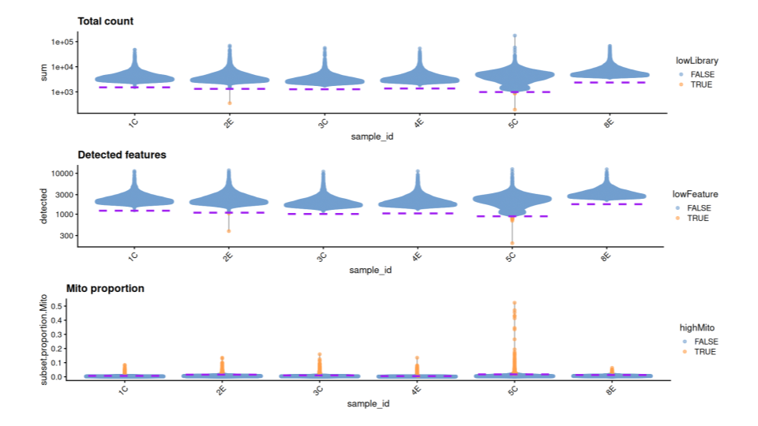
But is this true? Let’s visualize it a couple of ways.
gridExtra::grid.arrange(
plotColData(sce, y="sum", x="sample_id", colour_by="lowLibrary") +
categoricalHlinesNamed(metadata(sce)$qc$thresholds$sum, levels=NULL, linetype="dashed", color="purple") +
categoricalHlines(unique(sce$sample_id), metadata(sce)$nb_qc$thresholds$sum, levels = NULL, linetype = 'dashed', color = "darkgrey") +
scale_x_discrete(guide = guide_axis(angle = 45)) +
scale_y_log10() +
ggtitle("Total count"),
plotColData(sce, y="detected", x="sample_id", colour_by="lowFeature") +
categoricalHlinesNamed(metadata(sce)$qc$thresholds$detected, levels=NULL, linetype="dashed", color="purple") +
categoricalHlines(unique(sce$sample_id), metadata(sce)$nb_qc$thresholds$detected, levels = NULL, linetype = 'dashed', color = "darkgrey") +
scale_x_discrete(guide = guide_axis(angle = 45)) +
scale_y_log10() +
ggtitle("Detected features"),
plotColData(sce, y="subset.proportion.Mito", x="sample_id", colour_by="highMito") +
categoricalHlinesNamed(metadata(sce)$qc$thresholds$subset.proportion[["Mito"]], levels=NULL, linetype="dashed", color="purple") +
categoricalHlines(unique(sce$sample_id), metadata(sce)$nb_qc$thresholds$subset.proportion[["Mito"]], levels = NULL, linetype = 'dashed', color = "darkgrey") +
scale_x_discrete(guide = guide_axis(angle = 45)) +
ggtitle("Mito proportion"),
nrow = 3)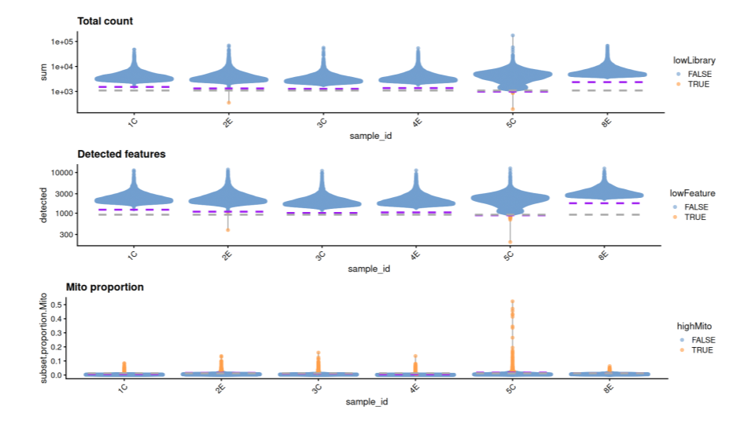
filterSampleSuggestions <- list(Features = which(sce$lowFeature),
Library = which(sce$lowLibrary),
Mitochondrial = which(sce$highMito))
ggVennDiagram(filterSampleSuggestions)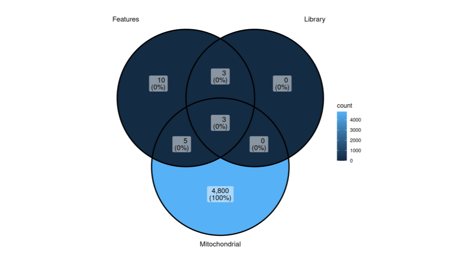
note that the advanced section of the OSCA book suggests that this adaptive thresholding approach may not work for single nuclear data, specifically with respect to mitochondrial reads, because the MAD may be too close to zero and then too much is getting filtered out. Another important note is mentioned here in this paper that certain types of data are going to have much higher mitochondrial activity and that should be taken into account when setting a threshold
Identify doublets for removal
Note that the approach the paper used was to first normalize the data, then find the top variable genes, then compute the doublet density estimate/scores, and using the Griffiths method for thresholding to flag doublets. This mirrors the old scran approach that is now deprecated
- https://rissolab.github.io/AtlasCortexSD/articles/1_ct_anno.html#doublets-removal
- https://plger.github.io/scDblFinder/articles/introduction.html#computedoubletdensity
I chose to use this more streamlined approach rather than the approach the paper used for a couple of reasons
- The paper approach would have required running normalization first (and I can use this opportunity to explain the nuance that some doublet detection tools/methods require that)
- The tool documentation recommends this approach over the Griffiths method saying it’s the most accurate in their benchmarking
- I didn’t see any snRNA-seq specific advice
This approach does have a clustering option, but the package maintainers suggest using it if your data very clearly clusters or you’re interested in where the doublets originated from. https://plger.github.io/scDblFinder/articles/scDblFinder.html#should-i-use-the-cluster-based-doublet-generation-or-not
In your expert opinion, is there any problem with using scDblFinder rather than the computeDoubletDensity and Griffiths method approach?
set.seed(8902) #need to set random seed because of the simulation this tool is doing
sce <- scDblFinder::scDblFinder(sce, samples="sample_id")I don’t think there’s much I can do about these warnings messages for deprecation since the scDblFinder package is using those deprecated functions.
Warning messages
Warning messages:
1: In .checkSCE(sce, coerce = is.null(samples)) :
Some cells in `sce` have an extremely low read counts; note that these could trigger errors and might best be filtered out
2: In .local(x, ...) : 'normalizeCounts' is deprecated.
Use 'scrapper::normalizeCounts' instead.
See help("Deprecated")
3: In .local(x, ...) : 'librarySizeFactors' is deprecated.
Use 'scrapper::centerSizeFactors' instead.
See help("Deprecated")
4: In .local(x, ...) : 'normalizeCounts' is deprecated.
Use 'scrapper::normalizeCounts' instead.
See help("Deprecated")
5: In .local(x, ...) : 'librarySizeFactors' is deprecated.
Use 'scrapper::centerSizeFactors' instead.
See help("Deprecated")
6: In .local(x, ...) : 'normalizeCounts' is deprecated.
Use 'scrapper::normalizeCounts' instead.
See help("Deprecated")
7: In .local(x, ...) : 'librarySizeFactors' is deprecated.
Use 'scrapper::centerSizeFactors' instead.
See help("Deprecated")
8: In .local(x, ...) : 'normalizeCounts' is deprecated.
Use 'scrapper::normalizeCounts' instead.
See help("Deprecated")
9: In .local(x, ...) : 'librarySizeFactors' is deprecated.
Use 'scrapper::centerSizeFactors' instead.
See help("Deprecated")
10: In .checkSCE(sce, coerce = is.null(samples)) :
Some cells in `sce` have an extremely low read counts; note that these could trigger errors and might best be filtered out
11: In .local(x, ...) : 'normalizeCounts' is deprecated.
Use 'scrapper::normalizeCounts' instead.
See help("Deprecated")
12: In .local(x, ...) : 'librarySizeFactors' is deprecated.
Use 'scrapper::centerSizeFactors' instead.
See help("Deprecated")
13: In .local(x, ...) : 'normalizeCounts' is deprecated.
Use 'scrapper::normalizeCounts' instead.
See help("Deprecated")
14: In .local(x, ...) : 'librarySizeFactors' is deprecated.
Use 'scrapper::centerSizeFactors' instead.
See help("Deprecated")table(colData(sce)$scDblFinder.class)singlet doublet
60860 5129Notice that we’ve saved all of the necessary quality filtering flags in either the rowData (for non-informative gene filtering) or colData for droplet filtering.
If we consider the library size, number of genes detected, and mitochondrial proportion metrics we were looking at earlier, the droplets identified as doublets would be difficult to disentangle using only those metrics.
plotColData(sce, x = "sum",
y = "detected",
colour_by = "subset.proportion.Mito",
point_alpha = 0.25,
other_fields = "scDblFinder.class") +
scale_color_viridis_c(direction = -1) +
facet_wrap(~`scDblFinder.class`)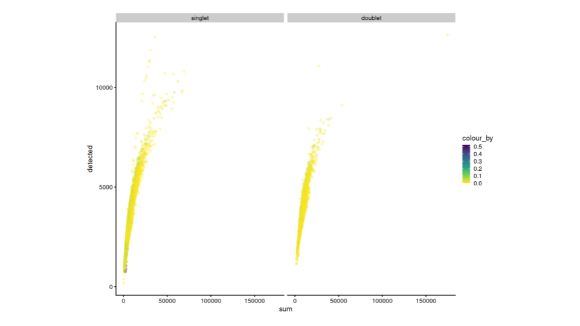
In fact, there are several cells that the MAD thresholds would suggest keeping that appear to be doublets which should be removed.
plotColData(sce, x = "sum",
y = "detected",
colour_by = "keep",
point_alpha = 0.25,
other_fields = "scDblFinder.class") +
facet_wrap(~`scDblFinder.class`)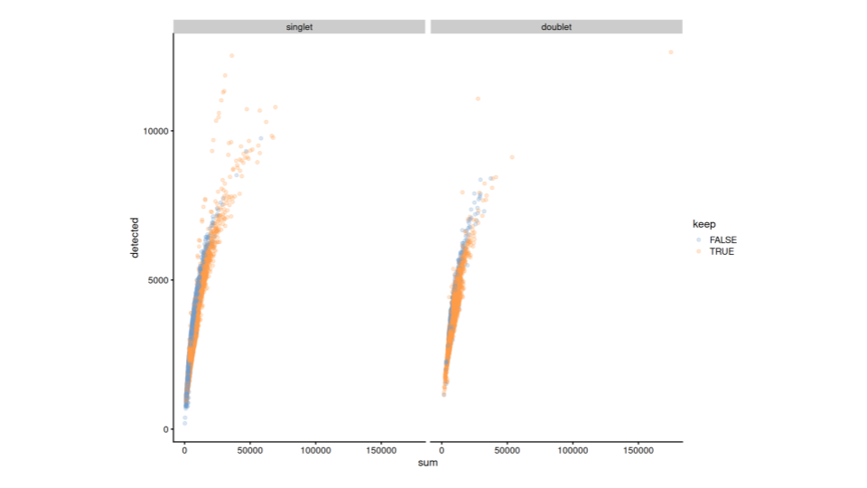
filterSuggestions <- list(MAD_thresholding = which(!sce$keep),
doublets = which(sce$scDblFinder.class == "doublet"))
ggVennDiagram(filterSuggestions)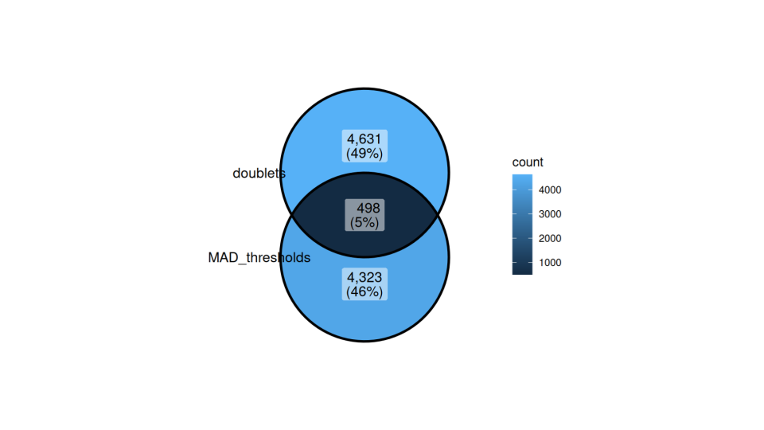
Add instructions for saving data in case people take a break (my file is data/wrangled/sce_filter_annot.rds)
Part 3: Applying QC Filters and Normalization
Add instructions for loading data in case people take a break and come back here
Applying the filters ….
I should wait to apply all of the filters at the same time prior to normalization rather than applying them after each step, correct? scDblFinder maintainer suggests I should https://github.com/plger/scDblFinder/issues/40 but then I’m also getting a warning from the package when I run the function saying there are cells with extremely low counts. And I see other people on forums recommending that I should remove ambient RNA flagged droplets prior to doublet detection
How do the suggested filters from our process compare to the whitelist output from salmon alevin?
keepSuggestions <- list(qcKeep = which(sce$keep & (sce$scDblFinder.class == "singlet")),
salmonKeep = which(sce$whitelist))
ggVennDiagram(keepSuggestions)ottrpal::include_slide('https://docs.google.com/presentation/d/1NwTGnca5G7c_dQLgNpYEgMJp2tWpyjjG7sl4t_vxTPg/edit?slide=id.g3ec2fe01f05_1_52#slide=id.g3ec2fe01f05_1_52')Droplet-level filtering
sce$combined_keep <- sce$keep & (sce$scDblFinder.class == "singlet") #add in ambient RNA detection filter here too after diem run
sce <- sce[,sce$combined_keep]Gene-level filtering
sce <- sce[rowData(sce)$keep_informative,] #non-informative gene filterWhat does the data look like now?
Quality control metrics revisited
plotColData(sce, x = "sum", y = "detected", colour_by = "subset.proportion.Mito", point_alpha = 0.25) + scale_color_viridis_c(direction = -1)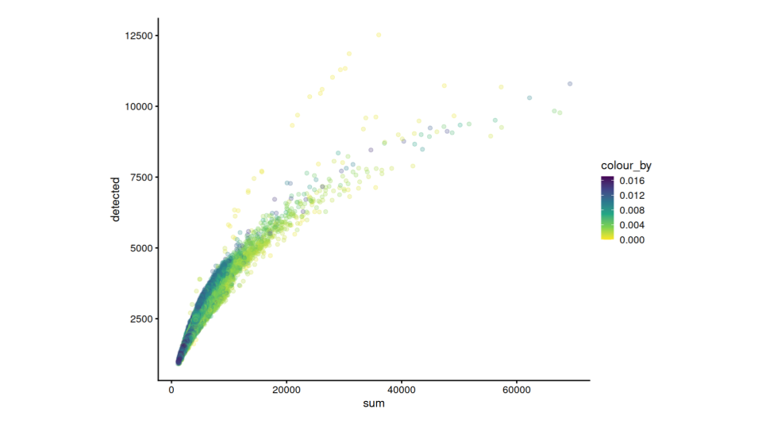
After filtering out the cells that our process identified, if we plot those QC metrics and color by whether or not salmon alevin would have kept them, we can see which cells it would have removed.
plotColData(sce, x = "sum", y = "detected", colour_by = "whitelist", point_alpha = 0.25)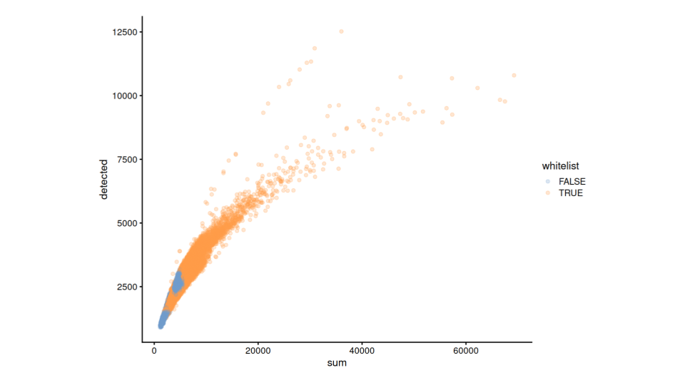
New dimensions
dim(sce)[1] 30943 56537Expression visualized
colSums(assays(sce)$counts) %>%
as.data.frame() %>%
ggplot(aes(x=`.`)) +
geom_histogram(bins = 500) +
theme_bw() +
xlab("library size after QC")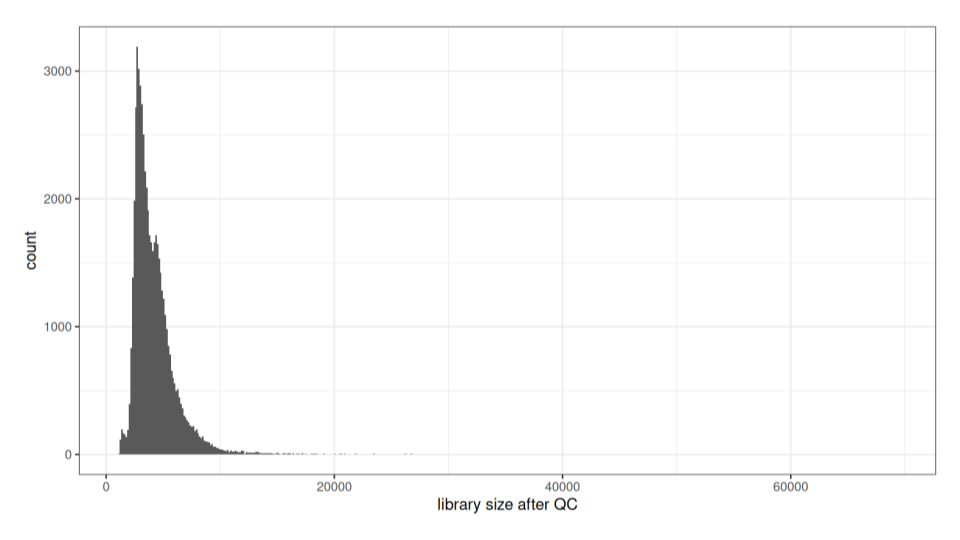
Now we have many more nuclei than genes (as we had expected). More than twice the number of nuclei compared to genes. And we can be more confident in describing the rows as genes rather than features and the columns as nuclei rather than droplets.
We can also free up some memory space again
rm(filterSuggestions)
rm(keepSuggestions)
rm(sce_list)Transformation
We’ll want to perform the normalization transformation for each sample separately so we’ll
- first separate our
sceobject by sample_id into a list again - for each sample specific
SingleCellExperimentobject in the list, we’ll perform normalization. - We’ll then recombine the data into a single
SingleCellExperimentobject
Option A: logNormCounts
sce_list <- split(sce, sce$sample_id)
names(sce_list) <- make.names(names(sce_list)) #if we don't do this, the names begin with a number and we won't be able to as easily access the different samples
sce_list <- lapply(sce_list, function(sub_sce) {
assay(sub_sce, "logcounts") <- scran::logNormCounts(sub_sce)
return(sub_sce)
})
Some warnings showed up about deprecated functions that logNormCounts is using
Warning messages:
1: In .library_size_factors(assay(x, assay.type), ...) :
'librarySizeFactors' is deprecated.
Use 'scrapper::centerSizeFactors' instead.
See help("Deprecated")
2: In .local(x, ...) : 'normalizeCounts' is deprecated.
Use 'scrapper::normalizeCounts' instead.
See help("Deprecated")
3: In .library_size_factors(assay(x, assay.type), ...) :
'librarySizeFactors' is deprecated.
Use 'scrapper::centerSizeFactors' instead.
See help("Deprecated")
4: In .local(x, ...) : 'normalizeCounts' is deprecated.
Use 'scrapper::normalizeCounts' instead.
See help("Deprecated")
5: In .library_size_factors(assay(x, assay.type), ...) :
'librarySizeFactors' is deprecated.
Use 'scrapper::centerSizeFactors' instead.
See help("Deprecated")
6: In .local(x, ...) : 'normalizeCounts' is deprecated.
Use 'scrapper::normalizeCounts' instead.
See help("Deprecated")
7: In .library_size_factors(assay(x, assay.type), ...) :
'librarySizeFactors' is deprecated.
Use 'scrapper::centerSizeFactors' instead.
See help("Deprecated")
8: In .local(x, ...) : 'normalizeCounts' is deprecated.
Use 'scrapper::normalizeCounts' instead.
See help("Deprecated")
9: In .library_size_factors(assay(x, assay.type), ...) :
'librarySizeFactors' is deprecated.
Use 'scrapper::centerSizeFactors' instead.
See help("Deprecated")
10: In .local(x, ...) : 'normalizeCounts' is deprecated.
Use 'scrapper::normalizeCounts' instead.
See help("Deprecated")
11: In .library_size_factors(assay(x, assay.type), ...) :
'librarySizeFactors' is deprecated.
Use 'scrapper::centerSizeFactors' instead.
See help("Deprecated")
12: In .local(x, ...) : 'normalizeCounts' is deprecated.
Use 'scrapper::normalizeCounts' instead.
See help("Deprecated")Given the deprecation warnings, I think we should use scrapper functions instead of scran functions for this
sce <- scrapper::normalizeRnaCounts.se(sce,
size.factors = sce$sum,
block = sce$sample_id)Normalized Expression visualized
colSums(assays(sce)$logcounts) %>%
as.data.frame() %>%
ggplot(aes(x=`.`)) +
geom_histogram(bins = 500) +
theme_bw() +
xlab("library size after normalization")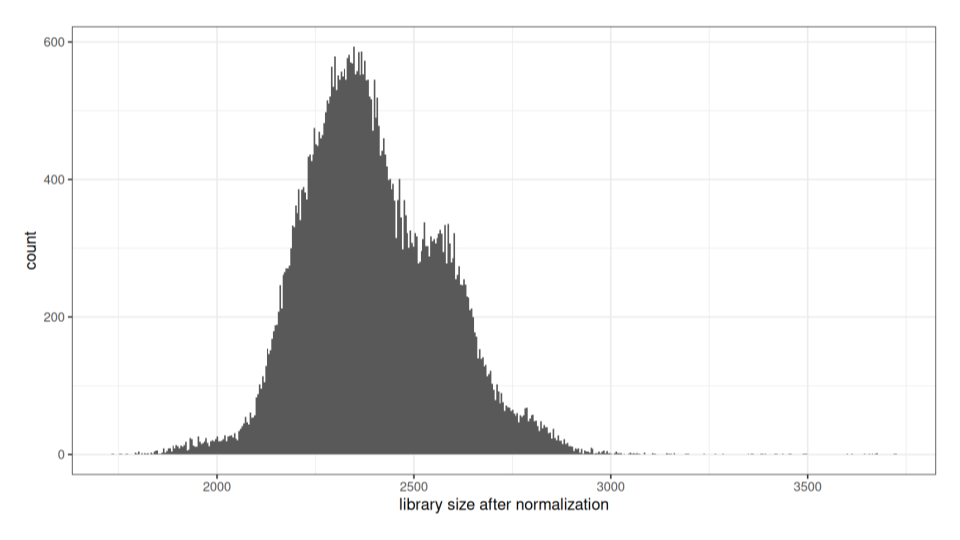
Option B: account for nuclei size
Deconvolution
Since quick clustering is being used within this approach to group cells of similar expression profiles, is it ever recommended to perform cell type assignment prior to deconvolution normalization?
clusters.block <- scran::quickCluster(sce, block = sce$sample_id)
deconv_sf <- calculateSumFactors(sce, clusters = clusters.block)
sce <- normalizeRnaCounts.se(sce,
size.factors=deconv_sf,
block = sce$sample_id,
output.name = "deconvcounts",
factor.name = "deconvSizeFactor")Normalized Expression visualized
colSums(assays(sce)$deconvcounts) %>%
as.data.frame() %>%
ggplot(aes(x=`.`)) +
geom_histogram(bins = 500) +
theme_bw() +
xlab("library size after deconvolution normalization")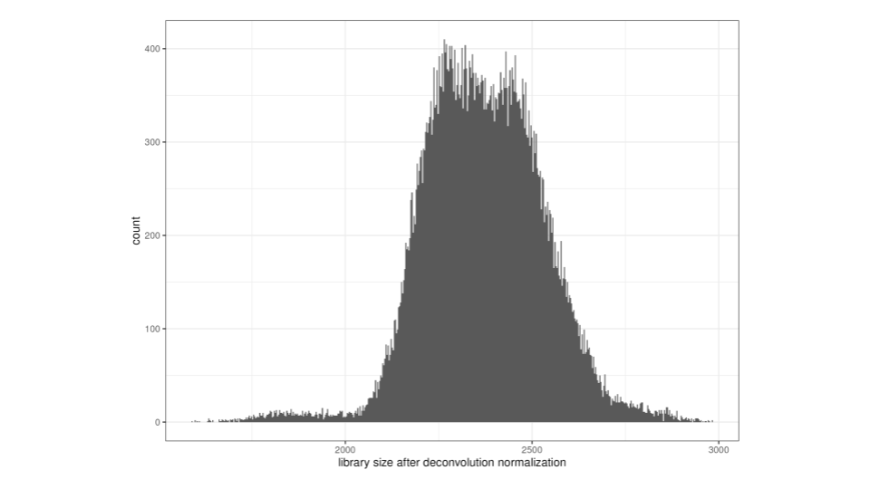
I didn’t find any vignettes or walkthroughs that did deconvolution with scrapper and using completely scran didn’t have the block option and would have required me to split the objects into a list and then recombine them. Does this look correct in the way I’ve combined the scran and scrapper functions to perform deconvolution normalization?
Comparing the options
quantile(deconv_sf) 0% 25% 50% 75% 100%
0.2564244 0.6933694 0.8708276 1.1582113 17.5060382quantile(sce$sizeFactor) 0% 25% 50% 75% 100%
0.3485906 0.9291513 1.1808229 1.5627790 22.0076022Looking at the two plots, I think that the deconvolution option is my preferred one because of the tighter bell-shaped curve. The regular log counts approach has a broader range of values, seems skewed, and also multimodal.
Add instructions for saving data here. My file is data/wrangled/sce_norm.rds
A summary of the data wrangling steps
… Adding a summary of the data wrangling steps directly related to data handling in this section that I propose we use (since above this section I showed methods that either didn’t take batch into account or used deprecated functions)
# Data Prep
exon_ids <- rowData(snrna_data) %>%
as.data.frame() %>%
dplyr::filter(!grepl("-I", gene_id)) %>%
pull(gene_id)
exon_data <- snrna_data[exon_ids]
intron_ids <- rowData(snrna_data) %>%
as.data.frame() %>%
dplyr::filter(grepl("-I", gene_id)) %>%
pull(gene_id)
intron_data <- snrna_data[intron_ids]
pattern_to_remove <- "\\..*"
replace_string <- ""
exon_ids <- sub(pattern_to_remove, replace_string, exon_ids)
intron_ids <- sub(pattern_to_remove, replace_string, intron_ids)
rownames(exon_data) <- exon_ids
rownames(intron_data) <- intron_ids
rownames(snrna_data) <- sub(pattern_to_remove, replace_string, rownames(snrna_data))
same_ensembl <- intersect(exon_ids, intron_ids)
snrna_data_ids_subset <- rownames(snrna_data) %>%
as.data.frame() %>%
dplyr::filter(!. %in% same_ensembl) %>%
pull(.)
sce <- SingleCellExperiment(assays = list(counts = rbind(counts(snrna_data[snrna_data_ids_subset]),
counts(exon_data[same_ensembl]) + counts(intron_data[same_ensembl]))))
colData(sce) <- colData(snrna_data)
rowData(sce) <- rbind(rowData(snrna_data) %>%
as.data.frame() %>%
dplyr::filter(rownames(.) %in% snrna_data_ids_subset),
rowData(snrna_data) %>%
as.data.frame() %>%
dplyr::filter(rownames(.) %in% same_ensembl)
)
sce <- sce %>%
mutate(condition = case_when(str_detect(sample_id, "C") ~ "Control",
str_detect(sample_id, "E") ~ "SleepDeprived"
)
) %>%
mutate(replicate = factor(str_remove(sample_id, "C|E")))
map <- AnnotationDbi::mapIds(EnsDb.Mmusculus.v79, keys = rownames(sce), column = "SEQNAME",
keytype = "GENEID")
rowData(sce)$CHR <- map
rowData(sce)$is_mito <- case_when(
rowData(sce)$CHR == "MT" ~ TRUE,
.default = FALSE
)
# QC to identify filters
## Ambient RNA detection <- will need to fill in
sce_list <- split(sce, sce$sample_id)
names(sce_list) <- make.names(names(sce_list)) #if we don't do this, the names begin with a number and we won't be able to as easily access the different samples
names(sce_list)
## non-informative genes
rowData(sce)$keep_informative <- rowSums(assays(sce)$counts > 0) > 10
## library size, detected genes, mito percent
sce <- quickRnaQc.se(sce, subsets = list(Mito = which(rowData(sce)$is_mito)),
block = sce$sample_id)
## doublets
set.seed(8902) #need to set random seed because of the simulation this tool is doing
sce <- scDblFinder::scDblFinder(sce, samples="sample_id")
# Applying Filters
sce$combined_keep <- sce$keep & (sce$scDblFinder.class == "singlet") #add in ambient RNA detection filter here too after diem run
sce <- sce[,sce$combined_keep]
sce <- sce[rowData(sce)$keep_informative,] #non-informative gene filter
# Normalization
## Option A: logcounts
sce <- scrapper::normalizeRnaCounts.se(sce,
size.factors = sce$sum,
block = sce$sample_id)
# visualize
## Option B: deconvolution
sce$quickClusters <- scran::quickCluster(sce, block = sce$sample_id)
deconv_sf <- scran::calculateSumFactors(sce, clusters = sce$quickClusters)
sce <- normalizeRnaCounts.se(sce,
size.factors=deconv_sf,
block = sce$sample_id,
output.name = "deconvcounts",
factor.name = "deconvSizeFactor")
# visualize
# Save the dataSummary of the order of steps that I expect for this section in the end ….
Option A:
- Handle Introns and Exons
- Mark Mitochondrial Genes
- Ambient RNA detection with
diem - Ambient RNA flagged droplet removal?
- Non-informative gene flagging
- removal of non-informative genes?
- Low quality or damaged droplet QC MAD thresholding using
scrapper(low library, low features, high mitochondrial) - filtering or low quality or damaged droplets?
- doublet identification with
scDblFinder - doublet removal
- Normalization (noting that normalization may be necessary prior to using some doublet detection tools)
Option B:
- Handle Introns and Exons
- Mark Mitochondrial Genes
- Ambient RNA detection with
diem - Non-informative gene flagging
- Low quality or damaged droplet QC MAD thresholding using
scrapper(low library, low features, high mitochondrial) - doublet identification with
scDblFinder - Combine filters for droplets (ambient RNA, doublets, MAD thresholding) and filter
- Filter non-informative genes
- Normalization (noting that normalization may be necessary prior to using some doublet detection tools, but redo it after filtering too)
Option C:
Expert recommendations?
Which of these options should I be using to order steps within this section for proper QC and normalization?
Notice that of the steps listed above, certain steps are done in a sample specific manner (whether that be by using a function parameter or splitting the data into an sce_list)
- Ambient RNA detection (
sce_list) - MAD thresholding for low quality or damaged droplets (function parameter)
- Doublet Identification (function parameter)
- logcount normalization (function parameter)
- Deconvolution Normalization (function parameter, though
sce_listif onlyscranfunctions)
Flagging non-informative genes is done globally, considering all of the data together
Data Visualization
If you have been following along but stopped, we could load our wrangled data like so:
Add instructions for loading data
If you skipped the data import section click here.
Add instructions for loading data
Heatmaps
Grabbing the gene names that were used for the heatmaps in Supplemental Figure 5 of the paper.
genes_to_use <- c("Gad1", "Gad2", "Slc17a7", "Sncg", "Vip", "Sst", "Pvalb", "Rorb", "Fezf2", "Foxp2", "Mbp", "Cldn5", "C1qa", "Lhx2", "Sox9", "Etv1", "Gfap", "Tle4", "Nos1", "Htr3a")
features <- rownames(sce)[which(rowData(sce)$SYMBOL %in% genes_to_use)]Note that I can’t just pass the genes_to_use vector to the function because it’s expecting rownames values which for us are ensembl IDs. If I just use the features to plot the heatmap (the corresponding ensembl IDs), then I can’t display the gene symbol names. However, I can set the swap_rownames argument to the rowData column I want SYMBOL in which case, I need to pass genes_to_use instead of features to the function.
Columns are nuclei
This heatmap plots a select number of genes within the rows and all of the nuclei that were retained after filtering along the columns. We’re specifically plotting the deconvolution normalized expression values.
Simplified example orienting learners to what the heatmap will look like
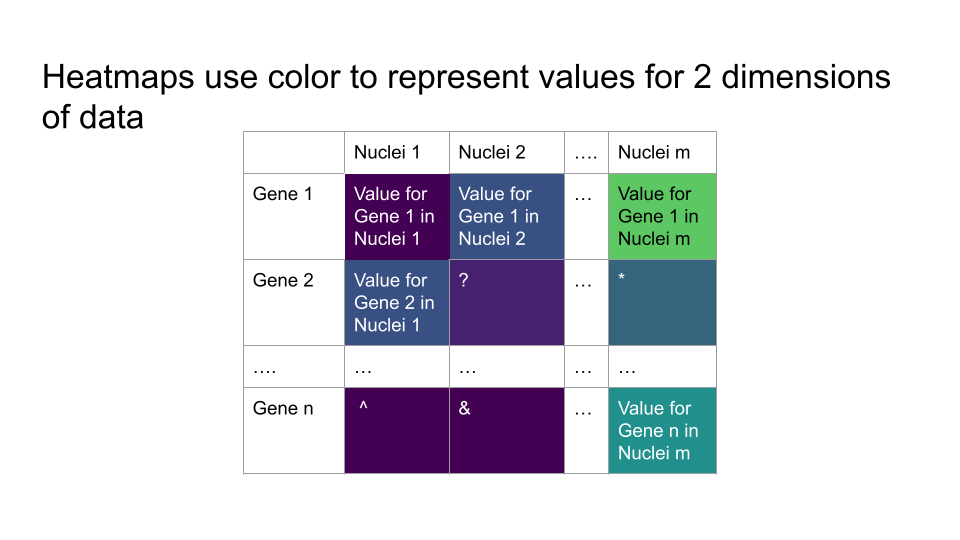
Can add thought questions about
- what the
?,*,&, and^cells would represent - why might color be used instead of labeling the cells with numbers?
- what would
nbe in this dataset? - what would
mbe in this dataset?
scater::plotHeatmap(sce,
genes_to_use,
exprs_values = "deconvcounts",
swap_rownames = "SYMBOL")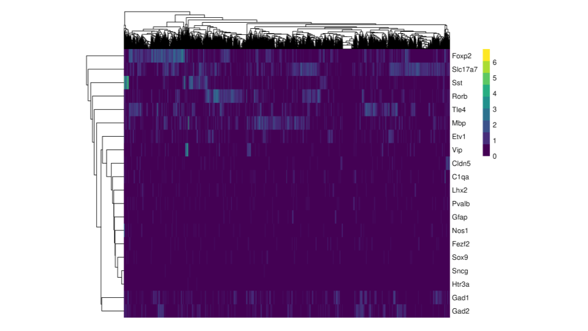
We can cluster just the columns (or the nuclei) (rather than the genes as well)
plotHeatmap(sce,
genes_to_use,
exprs_values = "deconvcounts",
swap_rownames = "SYMBOL",
cluster_rows = FALSE)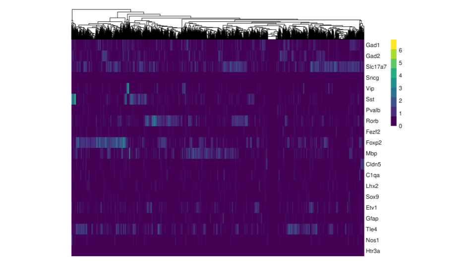
Or use no clustering at all
plotHeatmap(sce,
genes_to_use,
exprs_values = "deconvcounts",
swap_rownames = "SYMBOL",
cluster_rows = FALSE,
cluster_cols = FALSE)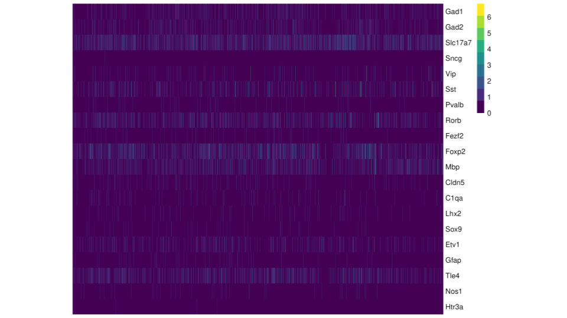
No matter which approach we use to plot this heatmap where a select number of genes are plotted in the rows and all nuclei retained after filtering are represented in the columns, we can observe how sparse the data is. We’re specifically plotting the deconvolution normalization counts for each of these genes for each of the nuclei. When we utilize some clustering, the non-zero values are clustered together showing neighborhoods of brighter color rather than being intermittently sprinkled throughout the data.
Columns are based on clustering clusters
For this heatmap, we’ll plot expression for genes (represented in rows again), but this time our columns will reflect the expression of that gene for clusters of nuclei. We’ll have to aggregate the counts across the nuclei within each cluster first though.
What are our options for aggregating counts?
- Sum gene-specific counts for all nuclei in a cluster
- Average gene-specific counts for all nuclei in a cluster
(We’ll provide the clusters and explain how we got them in a click to expand section … may use the Azimuth clusters but for now, using the clusters from the quick cluster approach though each sample will have non-overlapping clusters)
Aggregate by summing
sce_cluster_sums <- scrapper::aggregateAcrossCells.se(sce,
sce$quickClusters,
assay.type = "deconvcounts")This function sums by default without the chance to switch it to averaging, and the scuttle version which lets you specify averaging is deprecated.
plotHeatmap(sce_cluster_sums,
genes_to_use,
exprs_values = "sums",
swap_rownames = "SYMBOL")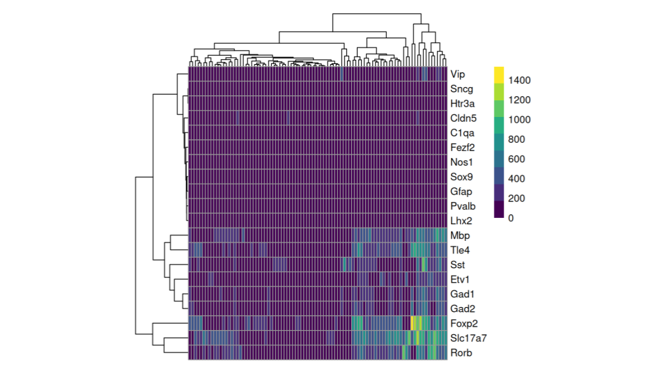
Just clustering the columns
plotHeatmap(sce_cluster_sums,
genes_to_use,
exprs_values = "sums",
swap_rownames = "SYMBOL",
cluster_cols = FALSE)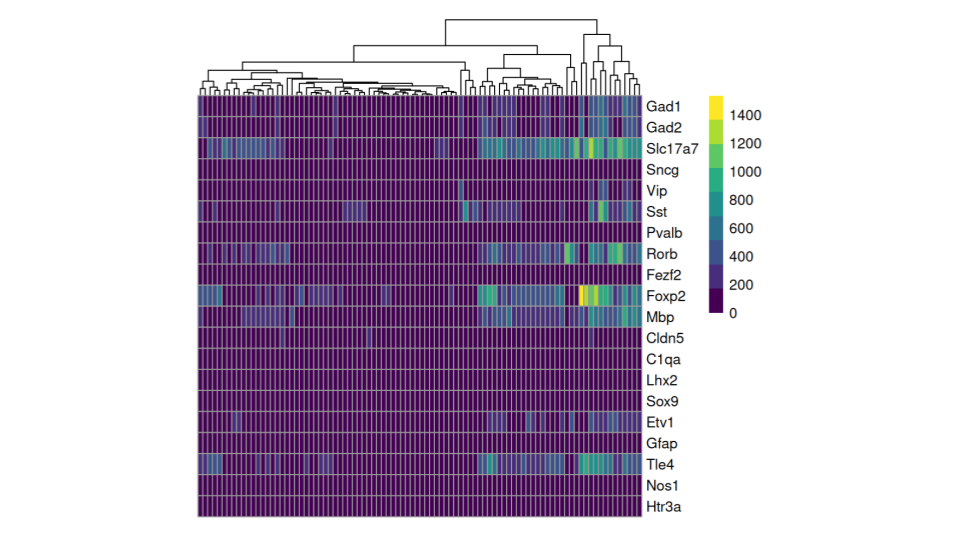
No clustering at all
plotHeatmap(sce_cluster_sums,
genes_to_use,
exprs_values = "sums",
swap_rownames = "SYMBOL",
cluster_rows = FALSE,
cluster_cols = FALSE)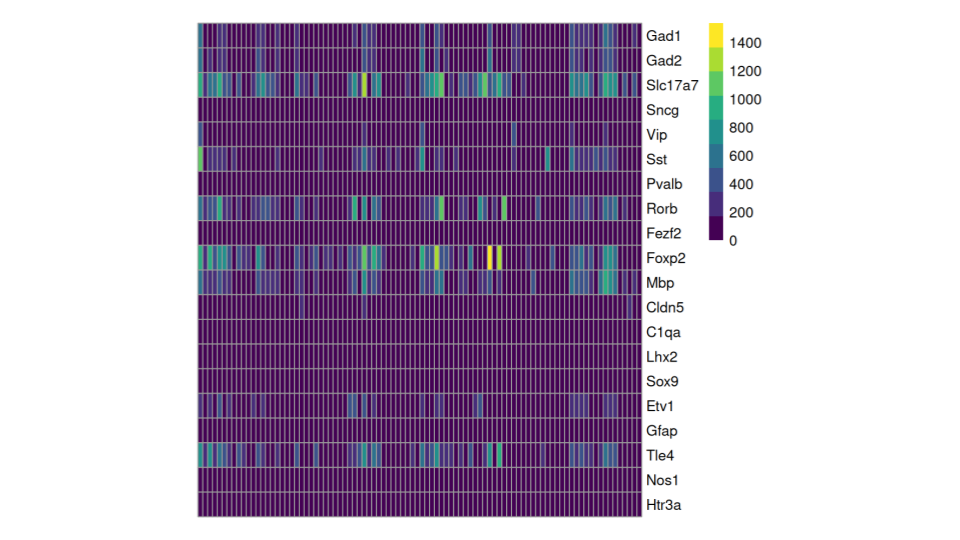
Columns are nuclei pooled for each sample
Aggregate by averaging
Because the aggregateAcrossCells.se function doesn’t natively support averaging, we would have to do it a different way - a few are discussed in this GitHub issues thread
agg <- aggregateAcrossCells.se(sce,
sce$sample_id,
assay.type = "deconvcounts")
assay(agg, "averages") <- t(t(assays(agg)$sums)/agg$counts)Alternatively, we can use the sweep function instead of the double transpose step. sce_sample_avgs <- sweep(assays(agg)$sums, MARGIN = 2, STATS = agg$counts, FUN = "/")
Finally, a better approach is to use a tidySingleCellExperiment function for this. (it can also do sums by switching the aggregation_function parameter)
sce_sample_avgs <- sce %>%
tidySingleCellExperiment::aggregate_cells(
.sample = sample_id, # The colData column to group by
assays = "deconvcounts", # The assay to aggregate
aggregation_function = Matrix::rowMeans # Computes average instead of sum
)
names(assays(sce_sample_avgs)) <- "averages"This heatmap shows the average normalized expression pooling all nuclei in a sample together – this visualization is the most similar to the data from bulk RNA-sequencing because it’s ignoring the “single cell/nuclei” aspects of the data.
plotHeatmap(sce_sample_avgs,
genes_to_use,
exprs_values = "averages",
swap_rownames = "SYMBOL",
colour_columns_by = "condition")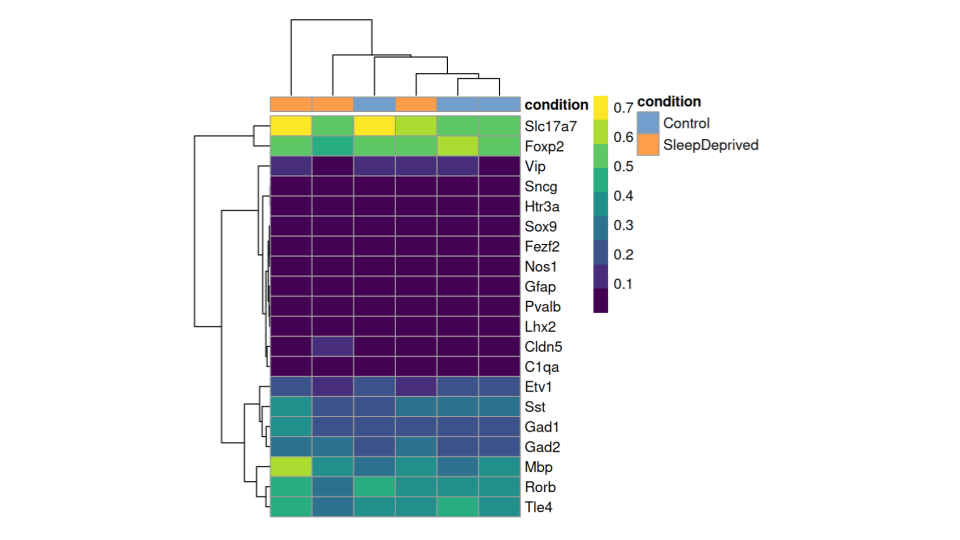
This heatmap only clusters the columns
plotHeatmap(sce_sample_avgs,
genes_to_use,
exprs_values = "averages",
swap_rownames = "SYMBOL",
cluster_rows = FALSE,
colour_columns_by = "condition")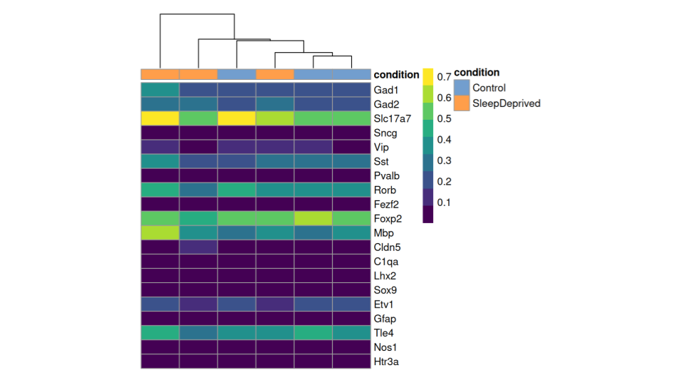
This heatmap doesn’t cluster either the rows or the columns
plotHeatmap(sce_sample_avgs,
genes_to_use,
exprs_values = "averages",
swap_rownames = "SYMBOL",
cluster_rows = FALSE,
cluster_cols = FALSE,
colour_columns_by = "condition")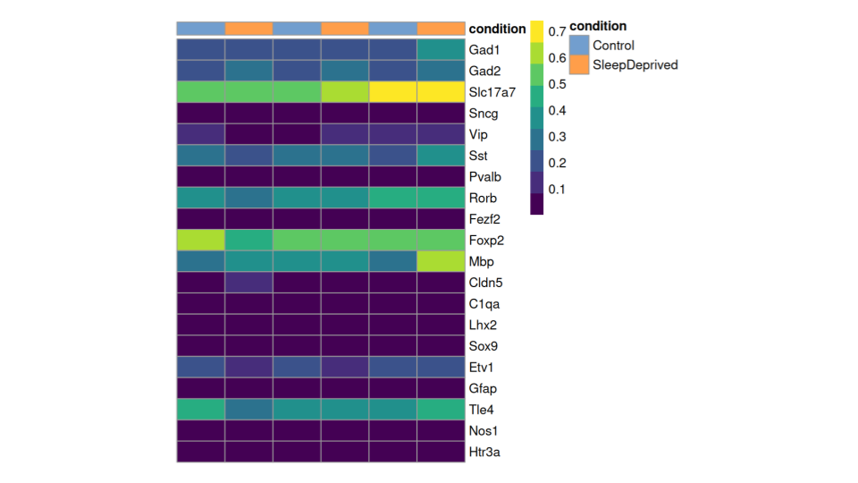
Add instructions for saving data. My file is the aggregated_list.RDS with both agg and sce_cluster_sums saved in the list.
Data Analysis
If you have been following along but stopped, we could load our wrangled data like so:
Add instructions for loading data
If you skipped the data import section click here.
Add instructions for loading data
We have a couple of spots so far in the process where we’ve had to make decisions and have a couple of options that will work, but we want to compare these options to decide which one is better for us. This specific comparison isn’t necessarily something that researchers will want to do. And perhaps for the normalization step, looking at the plot to see if there’s a bell curve is enough. But this analysis section is showing how we can find some stats out about our data, and showing how to evaluate those possible combinations / choices. We’re going to use a package named pipeComp for this because we can work with functions rather than scripts.
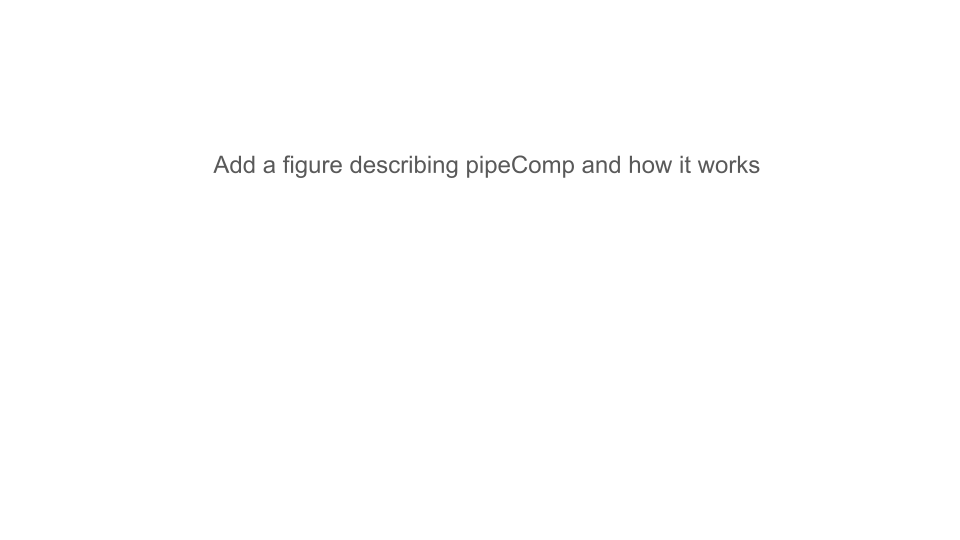
Put the process together with pipeComp
We’ll focus on combining the normalization and aggregation processes and ask a few questions about the normalized/aggregated data.
What is the highest expressed gene (within the clusters/samples)? What is its observed normalized expression?
For this we’ll want to look at within cluster/sample normalized expression and find the highest value and report that back. We can figure out which gene is the highest across the most number of clusters/samples. We’ll specifically report back the gene name, how many clusters/samples it’s the highest for, and the observed normalized expression value. We’ll call this "max".
How many genes have no observed normalized expression within a cluster/sample?
For this we’ll want to look within cluster/sample normalized expression values and find how many 0s there are. We can find the quartiles across the clusters/samples and report those numbers back (0%, 25%, 50%, 75%, and 100%). We’ll call this "min".
What is the highest observed variance of normalized expression (across the clusters/samples)? Which gene exhibits this amount of variance?
For this we’ll find the variance of each gene’s observed normalized expression across clusters/samples and then return the highest variance observed and which gene has that variance. We’ll call this "variance".
What is the lowest observed median normalized expression (within the clusters/samples)? Which gene is closest to this value?
For this we’ll find the median observed normalized expression value within each cluster/sample. We’ll then find which gene in that cluster/sample that has the closest observed normalized expression. Finally, we’ll pick the lowest value across all the clusters reporting the gene, the median value, and the grouping_id for the cluster or sample that gene was identified for. We’ll call this "median".
We can compare the results of each of these across different combinations of normalization and aggregation.
We’ll want to build some functions with parameters that control the functions/behavior so that we can use pipeComp.
The alternatives/choices we want to work with are
alternatives <- list(
par1=c("logcounts", "deconvolution"),
par2=c("sum", "average"),
par3 = c("cluster", "sample"),
par4 = c("max", "min", "variance", "median")
)
comb <- pipeComp::buildCombMatrix(alternatives)
combpar1 par2 par3 par4
1 logcounts sum cluster max
2 logcounts sum cluster min
3 logcounts sum cluster variance
4 logcounts sum cluster median
5 logcounts sum sample max
6 logcounts sum sample min
7 logcounts sum sample variance
8 logcounts sum sample median
9 logcounts average cluster max
10 logcounts average cluster min
11 logcounts average cluster variance
12 logcounts average cluster median
13 logcounts average sample max
14 logcounts average sample min
15 logcounts average sample variance
16 logcounts average sample median
17 deconvolution sum cluster max
18 deconvolution sum cluster min
19 deconvolution sum cluster variance
20 deconvolution sum cluster median
21 deconvolution sum sample max
22 deconvolution sum sample min
23 deconvolution sum sample variance
24 deconvolution sum sample median
25 deconvolution average cluster max
26 deconvolution average cluster min
27 deconvolution average cluster variance
28 deconvolution average cluster median
29 deconvolution average sample max
30 deconvolution average sample min
31 deconvolution average sample variance
32 deconvolution average sample medianCan build the functions in the narrative rather than just providing them.
#' A function to drive the normalization and aggregation process
#'
#' @parameter load_data either TRUE or FALSE. Will load data if TRUE, will run the normalization process if FALSE (unless provided sce has the names associated with the data already)
#' @parameter norm_method either logcounts or deconvolution
#' @parameter sce default is NULL, provide if load_data is FALSE. Should be a SingleCellExperiment object that is filtered but not yet normalized. Should have colData columns `sum` and `sample_id`
#' @parameter aggregation_method either sum or average
#' @parameter aggregation_across either cluster or sample
#' @return sce the SingleCellExperiment object with the newly normalized data saved in either the `logcounts` or `deconvcounts` assay slot
norm_aggregate_data <- function(norm_method, load_data, aggregation_method, aggregation_across, sce = NULL){
# check parameter inputs
stopifnot(load_data %in% c(TRUE, FALSE))
stopifnot(norm_method %in% c('logcounts', 'deconvolution'))
stopifnot(aggregation_method %in% c('sum', 'average'))
stopifnot(aggregation_across %in% c('cluster', 'sample'))
# normalization
if (load_data){
sce <- readRDS(here("data/wrangled/sce_norm.rds"))
} else {
if (is.null(sce)){
stop("Must provide an sce object with filtered, unnormalized or normalized data and colData columns `sum` and `sample_id`.")
}
if (norm_method == "logcounts"){
if (!("logcounts" %in% names(assays(sce)))) {
sce <- scrapper::normalizeRnaCounts.se(sce,
size.factors = sce$sum,
block = sce$sample_id)
}
}
if (norm_method == "deconvolution"){
if (!("quickClusters" %in% names(colData(sce)) & "deconvcounts" %in% names(assays(sce)))){
sce$quickClusters <- scran::quickCluster(sce, block = sce$sample_id)
deconv_sf <- scran::calculateSumFactors(sce, clusters = clusters.block)
sce <- normalizeRnaCounts.se(sce,
size.factors = deconv_sf,
block = sce$sample_id,
output.name = "deconvcounts",
factor.name = "deconvSizeFactor")
}
}
}
# aggregation
if(norm_method == "logcounts"){
assay_type <- "logcounts"
} else{
assay_type <- "deconvcounts"
}
if(aggregation_across == "cluster"){
coi <- "quickClusters"
if (!coi %in% names(colData(sce))){
sce$quickClusters <- scran::quickCluster(sce, block = sce$sample_id)
}
} else{
coi <- "sample_id"
}
if (aggregation_method == "sum"){
aggregated <- scrapper::aggregateAcrossCells.se(sce,
colData(sce)[[coi]],
assay.type = assay_type)
aoi <- "sums"
}
if (aggregation_method == "average"){
aggregated <- tidySingleCellExperiment::aggregate_cells(sce,
.sample = coi,
assays = assay_type)
names(assays(aggregated)) <- "averages"
aoi <- "averages"
}
return (assays(aggregated)[[aoi]])
}
#' A function to grab a specific descriptive stat or metric about the normalized and aggregated data
#'
#' @parameter agg_data the aggregated data
#' @parameter sce Should be a SingleCellExperiment object that is filtered but not yet normalized. Should have colData column `sample_id` or `quickClusters`
#' @parameter aggregation_method either sum or average
#' @parameter aggregation_across either cluster or sample
#' @parameter metric either max, min, variance, or median
#'
#' @return if metric is max the gene ID for the highest expressed gene (seen in the most aggregation_across) (as well as its expression)
#' if metric is min the average number of genes with no observed expression across the aggregation_across
#' if metric is variance the gene ID for the highest variance gene for variance across the aggregated clusters or samples (as well as its expression)
#' if metric is median the gene ID associated with the least median expression observed (as well as the median expression)
#'
grab_metric <- function(agg_data, metric){
stopifnot(metric %in% c('max', 'min', 'variance', 'median'))
col_names_res <- c("gene", "gene_count", "gene_avg",
"0%", "25%", "50%", "75%", "100%",
"median_value", "grouping_id",
"variance")
if (metric == "max"){
result <- apply(agg_data, 2, function(col) {
c(gene = rownames(agg_data)[which.max(col)], max_value = max(col))
}) %>%
t() %>%
as.data.frame() %>%
group_by(gene) %>%
summarize(gene_count = n(),
gene_avg = mean(as.numeric(max_value))) %>%
slice_max(gene_count, n = 1, with_ties = FALSE)
}
if (metric == "min"){
result <- colSums(agg_data == 0) %>% quantile() %>% t() %>% as.data.frame()
}
if (metric == "variance"){
result <- apply(agg_data, 1, var) %>%
as.data.frame() %>%
slice_max(as.numeric(`.`), n = 1, with_ties = FALSE) %>%
dplyr::rename(., variance = `.`) %>%
mutate(gene = rownames(.))
}
if (metric == "median"){
result <- apply(agg_data, 2, function(col) {
# Calculate the standard median
med_val <- round(median(col),2)
# Find the row index of the value closest to the median
gene <- rownames(agg_data)[which.min(abs(col - med_val))]
c(gene = gene, median_value = med_val)
}) %>%
t() %>%
as.data.frame() %>%
mutate(grouping_id = as.factor(row_number())) %>%
slice_min(as.numeric(median_value), n = 1, with_ties = FALSE)
}
missing_cols <- setdiff(col_names_res, colnames(result))
result[missing_cols] <- NA
return(list(result))
}Putting these functions together into a pipeline that pipeComp can run through with our different parameter alternatives ….
norm_aggregate_pipeline <- pipeComp::PipelineDefinition( list(
step1 = function(x, par1, par2, par3){
x <- norm_aggregate_data(par1, FALSE, par2, par3, x)
},
step2 = function(x, par4){
e <- grab_metric(x, par4)
list(x = x, intermediate_return = e)
}
),
# 2. Tell pipeComp how to aggregate the metric from step2
aggregation = list(
step2 = pipeComp::defaultStepAggregation
)
)Warning message (which is spot on/exactly what I wanted to do which is to have my evaluation performed by the step’s function itself)
Warning message:
In pipeComp::PipelineDefinition(list(step1 = function(x, par1, par2, :
An aggregation is defined for some steps that do not have a defined evaluation function: step2 It is possible that evaluation is performed by the step's function itself.Running the pipeline with pipeComp
Finally, we run the pipeline on the alternatives for our dataset. We do have to specify our dataset within a list.
datasets <- list(sce = sce)
res <- runPipeline(datasets, alternatives, norm_aggregate_pipeline)Viewing the results from pipeComp
And we view the comparison
pivot_wider(res$evaluation$step2[[1]],
names_from = par4,
values_from = c(gene, gene_count, gene_avg, `0%`, `25%`, `50%`, `75%`, `100%`, median_value, grouping_id, variance)) %>%
select(where(~ !all(is.na(.))))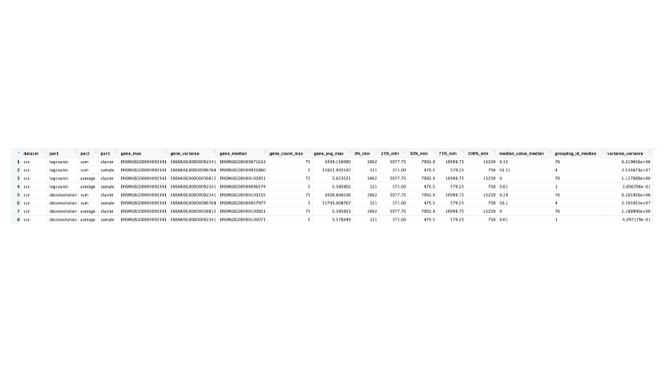
What do we observe for each of our questions?
Max
The gene with the maximum value in the most number of clusters/samples is the same no matter which combo we’re looking at. That
And what is the gene …
Min
Aggregating droplets within samples leads to many fewer genes with 0 observed normalized expression than when aggregating droplets within clusters.
Median
Lots of variability with which genes are associated with the median. But we see that the median values themselves are fairly low. But they’re relatively higher when looking at summing expression across samples.
Variance
High variances, mostly 3 genes across the combinations. What are the genes?
Summary
Synopsis
Summary Plot
Main Questions Revisited
NoteMain Questions Revisited: What Did We Learn
| Question | Current answer | Caveat |
|---|---|---|
| Reiteration or restatement of main question | Describe the answer based on case study activities | List any important caveats potentially connecting to earlier limitations |
| Another main question | Description of its activity | Caveats for this Q & A |
| Another of the main questions | Another description of this one’s activity | Q & A specific caveats |
Continued Learning
Common Next Steps
Discuss common next steps for this type of an analysis in this box. Is there a specific number of steps that you need to do before a specific step? Is a “next step” more of an alternate step?
Advancement Exercises
Use this section to suggest different levels of exercises that build upon topics from the case study … next steps, tangential skills, diving deeper into a side quest, etc.
Perhaps explain how the suggested exercises relate to the common next steps.
Beginner
Bubble plot heatmap visualization
Intermediate
Batch correction
Cluster to look for batch effects
Option A: Batch correct using knowledge of cell type (provided)
Option B: Batch correct without knowledge of cell type
Advanced
Add cell type annotations
Option A: Azimuth
Option B: Clustering approach
Compare
Handle replicates
Plot Heatmaps
Heatmap A: no scaling
Heatmap B: scaling to allow for row-by-row comparisons
Heatmap C: Bubble plot to show number of cells with expression
Describe that Differential Gene Expression Analysis will be a common next step
Additional Information
Helpful Links
Terms and concepts covered:
Packages used in this case study:
Glossary
| Term | Definition |
|---|---|
| Term 1 | Definition of Term 1 |
| Term2 | Definition of Term 2 |
References
Session Info
devtools::session_info()─ Session info ───────────────────────────────────────────────────────────────
setting value
version R version 4.3.2 (2023-10-31)
os Ubuntu 22.04.4 LTS
system x86_64, linux-gnu
ui X11
language (EN)
collate en_US.UTF-8
ctype en_US.UTF-8
tz Etc/UTC
date 2026-08-05
pandoc 3.1.1 @ /usr/local/bin/ (via rmarkdown)
─ Packages ───────────────────────────────────────────────────────────────────
package * version date (UTC) lib source
cachem 1.0.8 2023-05-01 [1] RSPM (R 4.3.0)
chromote 0.5.1 2025-04-24 [1] CRAN (R 4.3.2)
cli 3.6.5 2025-04-23 [1] CRAN (R 4.3.2)
curl 7.0.0 2025-08-19 [1] CRAN (R 4.3.2)
devtools 2.4.5 2022-10-11 [1] RSPM (R 4.3.0)
digest 0.6.34 2024-01-11 [1] RSPM (R 4.3.0)
dplyr 1.1.4 2023-11-17 [1] RSPM (R 4.3.0)
ellipsis 0.3.2 2021-04-29 [1] RSPM (R 4.3.0)
evaluate 1.0.5 2025-08-27 [1] CRAN (R 4.3.2)
fansi 1.0.6 2023-12-08 [1] RSPM (R 4.3.0)
fastmap 1.1.1 2023-02-24 [1] RSPM (R 4.3.0)
fs 1.6.3 2023-07-20 [1] RSPM (R 4.3.0)
generics 0.1.3 2022-07-05 [1] RSPM (R 4.3.0)
gitcreds 0.1.2 2022-09-08 [1] RSPM (R 4.3.0)
glue 1.7.0 2024-01-09 [1] RSPM (R 4.3.0)
hms 1.1.3 2023-03-21 [1] RSPM (R 4.3.0)
htmltools 0.5.7 2023-11-03 [1] RSPM (R 4.3.0)
htmlwidgets 1.6.4 2023-12-06 [1] RSPM (R 4.3.0)
httpuv 1.6.14 2024-01-26 [1] RSPM (R 4.3.0)
httr 1.4.7 2023-08-15 [1] RSPM (R 4.3.0)
jsonlite 2.0.0 2025-03-27 [1] CRAN (R 4.3.2)
knitr 1.50 2025-03-16 [1] CRAN (R 4.3.2)
later 1.3.2 2023-12-06 [1] RSPM (R 4.3.0)
lifecycle 1.0.4 2023-11-07 [1] RSPM (R 4.3.0)
magrittr 2.0.3 2022-03-30 [1] RSPM (R 4.3.0)
memoise 2.0.1 2021-11-26 [1] RSPM (R 4.3.0)
mime 0.12 2021-09-28 [1] RSPM (R 4.3.0)
miniUI 0.1.1.1 2018-05-18 [1] RSPM (R 4.3.0)
ottrpal 2.0.0 2025-12-16 [1] Github (ottrproject/ottrpal@6d1267e)
pillar 1.9.0 2023-03-22 [1] RSPM (R 4.3.0)
pkgbuild 1.4.3 2023-12-10 [1] RSPM (R 4.3.0)
pkgconfig 2.0.3 2019-09-22 [1] RSPM (R 4.3.0)
pkgload 1.4.1 2025-09-23 [1] CRAN (R 4.3.2)
png 0.1-8 2022-11-29 [1] CRAN (R 4.3.2)
processx 3.8.6 2025-02-21 [1] CRAN (R 4.3.2)
profvis 0.3.8 2023-05-02 [1] RSPM (R 4.3.0)
promises 1.2.1 2023-08-10 [1] RSPM (R 4.3.0)
ps 1.9.1 2025-04-12 [1] CRAN (R 4.3.2)
purrr 1.0.2 2023-08-10 [1] RSPM (R 4.3.0)
R6 2.6.1 2025-02-15 [1] CRAN (R 4.3.2)
Rcpp 1.0.12 2024-01-09 [1] RSPM (R 4.3.0)
readr 2.1.5 2024-01-10 [1] RSPM (R 4.3.0)
remotes 2.4.2.1 2023-07-18 [1] RSPM (R 4.3.0)
rlang 1.1.6 2025-04-11 [1] CRAN (R 4.3.2)
rmarkdown 2.25 2023-09-18 [1] RSPM (R 4.3.0)
rprojroot 2.1.1 2025-08-26 [1] CRAN (R 4.3.2)
rvest 1.0.5 2025-08-29 [1] CRAN (R 4.3.2)
sessioninfo 1.2.2 2021-12-06 [1] RSPM (R 4.3.0)
shiny 1.8.0 2023-11-17 [1] RSPM (R 4.3.0)
spelling 2.3.2 2025-08-18 [1] CRAN (R 4.3.2)
stringi 1.8.3 2023-12-11 [1] RSPM (R 4.3.0)
stringr 1.5.1 2023-11-14 [1] RSPM (R 4.3.0)
tibble 3.3.0 2025-06-08 [1] CRAN (R 4.3.2)
tidyr 1.3.1 2024-01-24 [1] RSPM (R 4.3.0)
tidyselect 1.2.0 2022-10-10 [1] RSPM (R 4.3.0)
tzdb 0.4.0 2023-05-12 [1] RSPM (R 4.3.0)
urlchecker 1.0.1 2021-11-30 [1] RSPM (R 4.3.0)
usethis 2.2.3 2024-02-19 [1] RSPM (R 4.3.0)
utf8 1.2.4 2023-10-22 [1] RSPM (R 4.3.0)
vctrs 0.6.5 2023-12-01 [1] RSPM (R 4.3.0)
webshot2 0.1.2 2025-04-23 [1] CRAN (R 4.3.2)
websocket 1.4.4 2025-04-10 [1] CRAN (R 4.3.2)
xfun 0.55 2025-12-16 [1] CRAN (R 4.3.2)
xml2 1.5.1 2025-12-01 [1] CRAN (R 4.3.2)
xtable 1.8-4 2019-04-21 [1] RSPM (R 4.3.0)
yaml * 2.3.12 2025-12-10 [1] CRAN (R 4.3.2)
[1] /usr/local/lib/R/site-library
[2] /usr/local/lib/R/library
──────────────────────────────────────────────────────────────────────────────Acknowledgments
We would also like to acknowledge the National Institute of General Medical Sciences for funding this work (1R25GM160622).
Icons are from iconpacks.